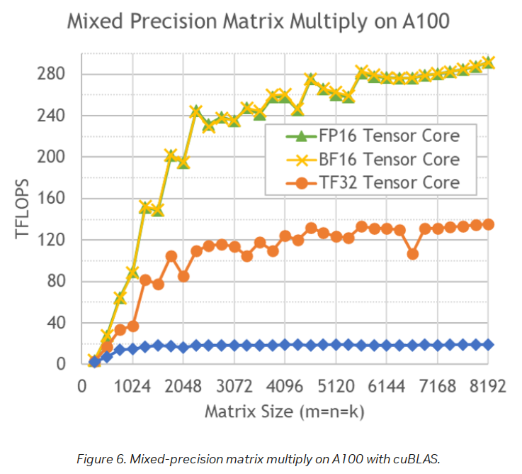

Accelerators: Specs, Vendors and Achievable Performance
An accelerator is the chip that does the arithmetic of training and inference: a GPU (graphics processing unit) from NVIDIA or AMD, a TPU (tensor processing unit) from Google, Trainium from AWS, Gaudi from Intel, or one of a handful of more exotic designs. It's the most expensive thing you will rent or buy, and every one of them is sold with a spec sheet full of numbers that are true, carefully chosen, and not what you will get.
This chapter teaches you to read those spec sheets, compute the headline numbers yourself from first principles, compare vendors fairly, and - most importantly - measure what an accelerator actually delivers. The spec sheet says an H100 does 989 TFLOPS of bf16; a well-tuned matmul on a real H100 holds about 786. Knowing that second number, and why it's the one to plan with, is the difference between an optimization effort that knows when to stop and one that chases a target nobody can hit.
The chapter has five parts:
- What we care about and why - the workload, the landscape, the glossary, and why the accelerator alone doesn't decide your return on investment.
- The spec sheet, number by number - TFLOPS, memory size and bandwidth, caches, clock speed, power and cooling, each with how to compute or check it, and a comparison table across every current high-end accelerator.
- Achievable vs theoretical - Maximum Achievable and Maximum Sustainable Matmul FLOPS (MAMF and MSMF), measured tables, the silicon lottery, and why a node runs at the speed of its slowest GPU.
- How to benchmark - timing correctly, why the values in your tensors change the timing, and the
mamf-finder.pytool in detail. - Vendors - NVIDIA, AMD, Intel Gaudi and GPU D-series, AWS Trainium, Google TPU, Huawei Ascend, Cerebras, SambaNova and the startups; their software stacks; AMD-specific tuning and profiling; and how to compare and buy.
Conventions:
- Every code block is runnable unless marked otherwise. The pure-arithmetic scripts need only
python3. Scripts marked [torch] needpip install torch numpy packaging; they were run on an Apple M4 laptop GPU (PyTorch'smpsdevice, torch 2.15.0, Python 3.14) while writing this chapter, and their output is pasted as-is. Commands marked [GPU, untested] need a datacenter GPU and were not executed for this chapter; they follow the vendors' documented tools. - Numbers in tables come from vendor documents, linked per row, or from measurements that the notes describe. Measurements from the M4 are one run on one laptop - an anecdote, not a benchmark.
- Specs move fast. Every "as of" date is the date a number was checked; re-check before you spend money on it.
Prerequisites
- Computer architecture: floating point formats (what fp32, bf16 and fp8 are), units and the classic mistakes (GB vs GiB, FLOPs vs FLOPS, dense vs sparse), the memory hierarchy (caches and why bandwidth matters), the GPU and especially the pieces (SMs, tensor cores, HBM), and arithmetic intensity and the roofline model.
- Linux and the OS: environment variables (for
CUDA_VISIBLE_DEVICES), NUMA and numactl, andnvidia-smi. - Concurrency: why naive GPU timing is wrong and CUDA events - the benchmarking sections rely on both.
- Networking for bits vs bytes and the scale-up fabric inside a node, and Transformer architectures for what a forward/backward pass of an LLM consists of.
Forward links: GPU Execution Model and Kernels, the next chapter, explains why a kernel gets the fraction of peak it gets; this chapter tells you what the peak is and how much of it is reachable. Interconnects (NVLink, UALink, UB Link, InfiniBand) are covered in Interconnects; MFU is derived in Training arithmetic.
What an accelerator is for
Almost all of the arithmetic in a neural network is matrix multiplication, a matmul, also called GEMM (general matrix multiply). An accelerator is a chip designed to do as many of those per second as possible, and to feed them with data fast enough.
There are two main ML workloads, training and inference, and they stress the hardware differently.
Inference of a language model generates text one token at a time. Each new token is another forward call, so a long answer is thousands of forward calls, each doing comparatively small matmuls (the batch is the number of sequences being served at once, and each contributes one new token per step). That can run on an accelerator, or - for small models and low traffic - on some recent CPUs that handle inference quite efficiently.
Training processes the whole sequence in one go. For a sequence of 4096 tokens the same weight matrix multiplies 4096 token vectors at once, so the matmul is 4096 times larger than a single-token inference step and needs a compute unit that can do that much work fast. Accelerators excel at exactly this: the larger the matrices, the more efficiently they run (we'll see why in TFLOPS).
Training also does more matmuls in total. The forward pass is the same as inference, but the backward pass does about twice as much again: one matmul to compute the gradient with respect to the layer's input and one for the gradient with respect to its weights. And if you use activation recomputation (also called gradient checkpointing: discard the activations saved during forward to save memory, and recompute them during backward; see activation checkpointing), there is an extra forward. So training costs 3-4x the matmul work of inference over the same tokens:
# train_vs_infer.py - matmul work per token, in units of one forward pass
forward, backward = 1, 2 # backward: grad wrt inputs + grad wrt weights
print("inference: ", forward)
print("training: ", forward + backward)
print("training + recomputation: ", forward + backward + forward)
inference: 1
training: 3
training + recomputation: 4
This is the same "6N FLOPs per token" you will derive in Training arithmetic: 2N for the forward, 4N for the backward.
Finetuning is usually the same workload as training. The exception is a light-weight method like LoRA, which freezes the base weights and trains only small low-rank matrices added alongside them; it needs much less memory and time than normal finetuning.
The landscape
Compute accelerators were once just GPUs. Now there are also TPUs, HPUs (Intel Gaudi's "AI processor units"), RDUs (SambaNova's dataflow units), wafer-scale engines, FPGAs (field-programmable gate arrays, chips whose logic you can rewire) and even QPUs (quantum processing units) on research roadmaps. Unlike the consumer GPU market, though, the high-end market has only a few products, and if you rent on the cloud most providers offer more or less the same handful.
Clouds come in tiers. Tier 1 are the hyperscalers - AWS, OCI (Oracle), Azure and GCP. Tier 2 are the smaller, GPU-focused clouds. The distinction matters for availability (new AMD parts usually appear on Tier 2 first) and for price (see How to get the best price).
As of 2026-08:
GPUs:
- NVIDIA: ML clouds and HPC (high-performance computing) centers already have B200s and B300s, and GB200/GB300 NVL72 racks (72 GPUs in one NVLink domain) are shipping. Rubin is expected in H2-2026.
- AMD: MI325X is widely available on Tier 2 clouds. MI355X is starting to appear, MI455X is hoped for in 2026, and - new - large CSPs (cloud service providers) have started to offer AMD GPUs.
- Intel: the GPU D-series (D270, code-named Crescent Island) is an inference-oriented data-center GPU, launched at OCP 2026 with customer sampling in H2-2026. Intel has published only its FP8 peak (1.3 PFLOPS). See Intel GPU D-series.
HPUs:
- Intel's Gaudi2 and Gaudi3 are available on Intel's cloud.
- Falcon Shores was supposed to replace Gaudi in 2025; the project has been canceled.
TPU-like:
- Google's TPUs are available, but only for rent, and the software isn't easily portable between GPUs and TPUs. So many (most?) developers stay with GPUs rather than lock themselves into hardware that only one company sells.
- Amazon's Trainium2 has an architecture similar to the TPU's and is available on AWS.
Pods and racks:
- Cerebras' Wafer Scale Engine (WSE).
- SambaNova's SambaRack (SN40L today, SN50 from H2-2026).
- Dozens of pod and rack configurations that compose the GPUs above with very fast interconnects.
That is about it as of 2026-07-31. Vendors and products goes through each in detail.
Most of us rent compute and never see it. This is what an 8x H100 node physically looks like - the GPU tray of a Dell PowerEdge XE9680 rack server. The eight large heatsinks are the eight GPUs:

Glossary
Terms you will meet in spec sheets and in this chapter. Several are explained in more depth where they're first used.
- BLAS: Basic Linear Algebra Subprograms - the standard library interface for matmul and friends (cuBLAS on NVIDIA, hipBLASLt/rocBLAS on AMD).
- CDNA: AMD's data-center GPU architecture family (CDNA2 = MI250X, CDNA3 = MI300X/MI325X, CDNA4 = MI350X/MI355X).
- CPU: Central Processing Unit.
- CTS: Custom Thermal Solution - a vendor-supported cooling option that allows a higher power limit than the default.
- CU: Compute Unit - AMD's counterpart to NVIDIA's SM.
- CUDA: Compute Unified Device Architecture - NVIDIA's (proprietary) GPU programming platform.
- DCORE: the die core Intel reports Gaudi3 cache against; a Gaudi3 has 4 of them.
- DGX: NVIDIA's turn-key accelerator server line.
- ECC: Error Correcting Code - extra bits stored with memory that detect and correct bit flips.
- FMA: Fused Multiply-Add, a \cdot b + c in one instruction; counts as 2 FLOPs.
- FPGA: Field Programmable Gate Array.
- GA: Generally Available - the product can actually be bought or rented, as opposed to announced, sampling, or spec'd only.
- GCD: Graphics Compute Die - one of the dies in a multi-die AMD package (an MI250X has two).
- GDDR: Graphics DDR - the cheaper, lower-bandwidth memory used on consumer and some inference cards instead of HBM.
- GEMM: General Matrix Multiply.
- GPU: Graphics Processing Unit.
- HBM: High Bandwidth Memory - stacked DRAM in the accelerator's package; see HBM.
- HFU: Hardware FLOPS Utilization - achieved FLOPS over peak, counting every FLOP the hardware executes, including recomputation.
- HGX: NVIDIA's accelerator baseboard that OEMs (server makers) build their own servers around.
- HPC: High-performance Computing.
- HPU: Habana (Intel) Gaudi AI Processor Unit.
- LLC: Last Level Cache - the biggest, slowest cache before main memory.
- LPDDR: Low-Power DDR - the memory type used in laptops and phones; cheaper and denser per dollar than HBM but much slower.
- MAMF: Maximum Achievable Matmul FLOPS - see MAMF and MSMF.
- MFU: Model FLOPS Utilization - achieved model FLOPS over peak, counting only the model's own FLOPs.
- MIG: Multi-Instance GPU - NVIDIA's partitioning of one GPU into isolated instances.
- MME: Matrix Multiplication Engine - Gaudi's matmul unit.
- Matrix Core: AMD's counterpart to NVIDIA's Tensor Core.
- MSMF: Maximum Sustainable Matmul FLOPS.
- NVL72: an NVLink domain of 72 accelerators; likewise NVL8 and NVL36.
- OAM: OCP Accelerator Module - the Open Compute Project's accelerator form factor.
- PSU: Power Supply Unit.
- PTX: Parallel Thread Execution - NVIDIA's intermediate GPU instruction set.
- QPU: Quantum Processing Unit.
- RDU: Reconfigurable Dataflow Unit (SambaNova).
- ROCm: AMD's GPU software platform - its counterpart to the CUDA stack (driver, compiler, BLAS and collective-communication libraries).
- SM: Streaming Multiprocessor - NVIDIA's counterpart to AMD's CU.
- SRAM: Static Random Access Memory - the fast on-chip memory caches and registers are made of.
- TBP: Typical Board Power or Total Board Power, depending on vendor.
- TDP: Thermal Design Power or Thermal Design Parameter.
- TGP: Total Graphics Power.
- TPC: Tensor Processing Core - Gaudi's programmable vector unit.
- TPU: Tensor Processing Unit.
- WSE: Wafer Scale Engine - Cerebras' whole-wafer accelerator.
- XCD: Accelerator Complex Die - AMD's per-die cache reporting scope.
- XLA: Accelerated Linear Algebra - the compiler behind PyTorch/JAX on TPUs and Trainium.
Modal maintains a good additional GPU glossary.
The most important thing to understand
It's not enough to buy or rent the most expensive accelerators and expect a high return on investment (ROI). This point comes up again and again in this book.
The two metrics that decide ROI for ML training are:
- How fast the training finishes. If it takes 2-3x longer than planned, your model may be irrelevant before it's released - in a competitive market time is everything.
- The total $$ spent. If it takes 2-3x longer than planned, it costs 2-3x as much.
If the rest of the hardware isn't chosen to match the workload, the accelerators will spend much of their time idle, and both time and money are lost. The most critical other component is the network, then storage; the least critical are the CPU and CPU memory - at least for typical training, where CPU limitations are compensated for with multiple DataLoader workers.
If you rent, you usually don't get to choose: the hardware is fixed, or a few components can be swapped from a short list. If a provider doesn't offer a well-matched configuration, look for a different provider. If you buy, do very thorough due diligence first.
Hardware also needs software that uses it efficiently. Both sides are covered across the book; Profiling and optimization and Model parallelism are the main places.
Reading a spec sheet
What characteristics of an accelerator do we care about? We'll use NVIDIA's A100 spec sheet as the reference point for the next several sections. The SMs, tensor cores and HBM it refers to were introduced in The pieces; the GPU's internals are taken apart properly in the next chapter, GPU Execution Model and Kernels.

(source)
The rows that matter for ML are, in order: the TFLOPS per data type, the memory size and bandwidth, the interconnect bandwidth (covered in Interconnects), and the power. The next sections take them one at a time.
TFLOPS
What the number means
Matrix multiplication is made of many multiplications followed by sums. Each of those floating point operations can be counted, and the chip's speed is how many of them it can perform per second.
TFLOPS is trillions (10^{12}) of FLoating point OPerations per Second. It's the single number accelerators are most often judged by, and there is a separate figure for each data type. Here are a few of the theoretical peak TFLOPS from the A100 spec:
| Data type \ TFLOPS | w/o Sparsity | w/ Sparsity |
|---|---|---|
| FP32 | 19.5 | n/a |
| Tensor Float 32 (TF32) | 156 | 312 |
| BFLOAT16 Tensor Core | 312 | 624 |
| FP16 Tensor Core | 312 | 624 |
| FP8 Tensor Core | 624 | 1248 |
| INT8 Tensor Core | 624 | 1248 |
How to read it:
- INT8 is measured in TOPS (tera-operations per second), since integer math isn't floating point; the arithmetic is the same.
- Each halving of the data type's width doubles the rate: int8/fp8 is 2x bf16, which is 2x tf32 (tf32 is NVIDIA's 19-bit format that tensor cores use when you ask for "fp32" matmuls with TF32 enabled). Plain FP32 without tensor cores is much lower - 19.5 vs 156 - because it runs on the general-purpose lanes, not the tensor cores.
- The "w/ Sparsity" column is exactly 2x and only applies to 2:4 structured-sparse matrices (2 of every 4 consecutive values are zero), which ordinary training doesn't produce. Use the left column. See dense vs sparse FLOPS.
Watch the word itself. FLOPS can mean a count of floating point operations (how many FLOPS one Transformer iteration takes) or a rate (how many per second). In accelerator specs it's almost always the rate; when model architectures are discussed it's usually the count. This book writes FLOPs for the count and FLOPS for the rate, but you will see both spellings used both ways.
The achieved TFLOPS also depend on the matrix sizes:

(source)
How to read it: the x-axis is the size of a square matmul (m = n = k), the y-axis the achieved TFLOPS with cuBLAS. The FP16 and BF16 lines climb to about 290 of the 312 peak only at 8192; the TF32 line levels off around 130 of 156; the unlabelled blue line at the bottom, flat at about 19, is the FP32 path (its height matches the 19.5 FP32 spec). Small matmuls are nowhere near peak, and the curves aren't smooth - they have steps and dips. Both come from tile and wave quantization: a matmul is cut into fixed-size tiles that run in waves across the SMs, so a dimension that leaves the last tile, or the last wave, partly empty pays for work it doesn't do. The next chapter works through it in Why dims want multiples of 8, 16, 64, 128.
How to calculate theoretical TFLOPS
The theoretical peak published on a spec sheet isn't measured. It's computed:
where:
compute_unit_clock_speedis how many times the compute unit's clock ticks per second, in Hz;flops_per_clock_cycle_per_compute_unitis the number of floating point operations one compute unit (a tensor core, a Matrix Core, an MME) can execute per clock;num_compute_unitsis how many of those units the device has.
FLOPs per clock are rarely published, but FMAs per clock often are. One FMA is a multiply and an add, 2 FLOPs, so:
Let's check that this reproduces the published BF16 (half precision) specs. The H100 numbers come from Wikipedia. The hard part is the FMAs per tensor core per clock for BF16; this NVIDIA forum thread collects them. Most originate in the A100 whitepaper (search the PDF for "FMA" and pick the rows for your precision); the H100 whitepaper omits most per-unit FMA numbers but gives multipliers relative to the A100 ones. The clocks used, and what each vendor's "clock" actually means, are collected in Clock speed.
NVIDIA @ BF16 - BF16 runs on the tensor cores:
| Accelerator | Clock | FMAs per Tensor Core per clock | Tensor Cores | Spec TFLOPS | Notes |
|---|---|---|---|---|---|
| H100 SXM | 1830MHz | 512 | 528 | 989 | 1 |
| A100 SXM | 1410MHz | 256 | 432 | 312 | 1 |
Tensor Coresis derived: 4 tensor cores per SM, times 132 SMs for H100 SXM and 108 SMs for A100 SXM.
AMD @ BF16 - BF16 runs on the Matrix Cores:
| Accelerator | Peak Engine Clock | FMAs per Matrix Core per clock | Matrix Cores | Spec TFLOPS | Notes |
|---|---|---|---|---|---|
| MI355X | 2400MHz | 512 | 1024 | 2500 | 1 |
| MI350X | 2200MHz | 512 | 1024 | 2300 | 1 |
| MI300X | 2100MHz | 256 | 1216 | 1307 | |
| MI250X | 1700MHz | 128 | 880 | 383 | 2 |
- AMD publishes
2.5 PFLOPSfor MI355X and2.3 PFLOPSfor MI350X BF16 matrix, rounded to two significant digits. - AMD publishes the Matrix Core count for MI355X and MI350X (1024) and MI300X (1216), but not for MI250X, so its 880 is derived: 4 Matrix Cores per CU, times 220 CUs.
Intel Gaudi @ BF16 - Gaudi does matmul on its MMEs, each a 256 \times 256 array of multiply-accumulators:
| Accelerator | MME Clock | FMAs per MME per clock | MMEs | Spec TFLOPS |
|---|---|---|---|---|
| Gaudi 2 | 1650MHz | 256*256 | 2 | 432 |
| Gaudi 3 | 1600MHz | 256*256 | 8 | 1677 |
Now the arithmetic, for all of them at once, plus the inverse: given a published TFLOPS, which clock does it imply?
# tflops.py - theoretical peak = clock * FMAs/clock/unit * 2 FLOPs/FMA * units
rows = [ # name, clock MHz, FMAs per unit per clock, units, published dense bf16 TFLOPS
("NVIDIA H100 SXM", 1830, 512, 4 * 132, 989),
("NVIDIA A100 SXM", 1410, 256, 4 * 108, 312),
("AMD MI355X", 2400, 512, 1024, 2500),
("AMD MI350X", 2200, 512, 1024, 2300),
("AMD MI300X", 2100, 256, 1216, 1307),
("AMD MI250X", 1700, 128, 4 * 220, 383),
("Intel Gaudi2", 1650, 256 * 256, 2, 432),
("Intel Gaudi3", 1600, 256 * 256, 8, 1835), # whitepaper figure
]
def peak(mhz, fma, units):
return mhz * 1e6 * fma * 2 * units / 1e12
for name, mhz, fma, units, spec in rows:
t = peak(mhz, fma, units)
print(f"{name:16s} {t:8.1f} TFLOPS spec {spec:5d} ratio {t/spec:.3f}")
# inverse: which clock does a published TFLOPS imply?
def implied_mhz(tflops, fma, units):
return tflops * 1e12 / (fma * 2 * units) / 1e6
print(f"H100 SXM clock implied by 989 TFLOPS: {implied_mhz(989, 512, 528):.1f} MHz")
print(f"H100 SXM peak if the clock were 1980: {peak(1980, 512, 528):.1f} TFLOPS")
print(f"Gaudi3 clock implied by 1835 TFLOPS: {implied_mhz(1835, 256*256, 8):.1f} MHz")
print(f"H200 NVL clock implied by 835 TFLOPS: {implied_mhz(835, 512, 528):.1f} MHz (if it has 132 SMs)")
NVIDIA H100 SXM 989.4 TFLOPS spec 989 ratio 1.000
NVIDIA A100 SXM 311.9 TFLOPS spec 312 ratio 1.000
AMD MI355X 2516.6 TFLOPS spec 2500 ratio 1.007
AMD MI350X 2306.9 TFLOPS spec 2300 ratio 1.003
AMD MI300X 1307.4 TFLOPS spec 1307 ratio 1.000
AMD MI250X 383.0 TFLOPS spec 383 ratio 1.000
Intel Gaudi2 432.5 TFLOPS spec 432 ratio 1.001
Intel Gaudi3 1677.7 TFLOPS spec 1835 ratio 0.914
H100 SXM clock implied by 989 TFLOPS: 1829.2 MHz
H100 SXM peak if the clock were 1980: 1070.5 TFLOPS
Gaudi3 clock implied by 1835 TFLOPS: 1750.0 MHz
H200 NVL clock implied by 835 TFLOPS: 1544.4 MHz (if it has 132 SMs)
How to read the output:
- NVIDIA: both match - 989 for H100 SXM and 312 for A100 SXM.
- AMD: MI300X matches its spec, which you will usually see rounded down to
1300. MI250X matches exactly. MI355X (2516.6) and MI350X (2306.9) match AMD's published2.5and2.3PFLOPS within AMD's own rounding; MI350X is the same silicon as MI355X at a lower clock. - Gaudi2 matches. Gaudi3 comes out at 1677, not the 1835 in its whitepaper: to get 1835 the MME clock would have to be 1750MHz, and the shipping Gaudi3 runs at 1600MHz. That's why this chapter's tables carry 1677 for it.
- The H100 clock. 1830MHz is now NVIDIA's official figure. The widely published number used to be 1980MHz, and it doesn't work: it gives 1070 TFLOPS, some 80 above the spec. Before 1830MHz was official you could already recover it by inverting the formula against the spec TFLOPS, as the script does: 1829.2MHz. (1980MHz is the boost clock that reproduces the FP32 peak, as The pieces shows; the tensor-core figure is quoted at the lower clock.) That inversion is a useful trick in general: if a vendor publishes the TFLOPS but not the clock, or a clock that doesn't reproduce their own TFLOPS, the formula tells you which number they actually used.
Two more things to take from this:
- The FMAs per AMD Matrix Core doubled every CDNA generation - 128 on MI250X (CDNA2), 256 on MI300X (CDNA3), 512 on MI355X (CDNA4). The Matrix Core count barely moved (880 to 1216 to 1024), so that per-core doubling is where almost all of the generational BF16 gain came from, not from more cores.
- This peak is an aggregate over the whole accelerator.
528tensor cores is 4 \times 132 SMs, so a single matmul gets it only if it's large enough to keep every SM busy. A part with more SMs therefore doesn't automatically deliver more TFLOPS on your matmuls - see the tile and wave discussion in the next chapter and Profiling and optimization.
And the consequence that matters in practice: the clock is a factor in the formula. If your accelerator runs below its spec clock - because it's overheating and throttling, or because it has hit its power limit - its TFLOPS are proportionally lower than advertised. To check the actual clock under load see Clock speed.
TFLOPS comparison table
Here are the theoretical dense (no sparsity) peak TFLOPS of the high-end accelerators for each supported data type. The data types themselves were introduced in Floating point: IEEE 754, and how they're used in training is in Mixed precision internals and FP8 training.
The two FP4 columns are the two block-scaled FP4 formats. In a block-scaled format, every small block of 4-bit values shares one scale factor stored alongside it. mxfp4 is the Open Compute Project's microscaling format: one power-of-two (E8M0) scale per 32 elements. nvfp4 is NVIDIA's: one E4M3 (fp8) scale per 16 elements, plus a per-tensor FP32 scale. Which to use is discussed in Training arithmetic.
How to read the cells: a number is the vendor's dense peak; X means the format isn't supported or, for a few rows called out in the notes, that no rate is published; V means the format is supported but no rate is published; ? means the vendor hasn't stated the number. Both tables are sorted by the bf16 column, and the Notes column points to the numbered notes after them.
Generally available:
| Accelerator \ TFLOPS | fp32 | tf32 | fp16 | bf16 | fp8 | int8 | fp6 | mxfp4 | nvfp4 | Notes |
|---|---|---|---|---|---|---|---|---|---|---|
| NVIDIA GB300 SXM | 80.0 | 1250.0 | 2500 | 2500 | 5000 | 5000 | 5000 | 15000 | 15000 | 24 |
| NVIDIA GB200 SXM | 80.0 | 1250.0 | 2500 | 2500 | 5000 | 5000 | 5000 | 10000 | 10000 | 23 |
| AMD MI355X | 157.3 | ? | 2500 | 2500 | 5000 | 5000 | 10100 | 10100 | X | 22 |
| Google TPU v7x | ? | ? | 2307 | 2307 | 4614 | ? | ? | ? | ? | 25 |
| AMD MI350X | 144.2 | ? | 2300 | 2300 | 4600 | 4600 | 9200 | 9200 | X | 22 |
| NVIDIA B300 SXM | 80.0 | 1125.0 | 2250 | 2250 | 4500 | 4500 | 4500 | 13500 | 13500 | 21 |
| NVIDIA B200 SXM | 80.0 | 1125.0 | 2250 | 2250 | 4500 | 4500 | 4500 | 9000 | 9000 | 20 |
| Intel Gaudi3 | 229.0 | 459.0 | 459 | 1677 | 1677 | V | X | X | X | 8,19 |
| AMD MI325X | 163.4 | 653.7 | 1300 | 1300 | 2610 | 2600 | X | X | X | 18 |
| AMD MI300X | 163.4 | 653.7 | 1300 | 1300 | 2610 | 2600 | X | X | X | 17 |
| NVIDIA H200 SXM | 67.0 | 494.5 | 989 | 989 | 1979 | 1979 | X | X | X | 16 |
| NVIDIA H100 SXM | 67.0 | 494.5 | 989 | 989 | 1979 | 1979 | X | X | X | 12,15 |
| NVIDIA GH200 SXM | 67.0 | 494.5 | 989 | 989 | 1979 | 1979 | X | X | X | 14 |
| Google TPU v6e | ? | ? | 918 | 918 | 918 | 1836 | X | X | X | 13 |
| NVIDIA H200 NVL | 60.0 | 417.5 | 835 | 835 | 1670 | 1670 | X | X | X | 29 |
| NVIDIA H100 PCIe | 51.0 | 378.0 | 756 | 756 | 1513 | 1513 | X | X | X | 12 |
| AWS Trainium2 / Ultra | 181.0 | 667.0 | 667 | 667 | 1299 | X | X | X | X | 11 |
| Google TPU v5p | X | X | X | 459 | X | 918 | X | X | X | 10 |
| Intel Gaudi2 | V | V | V | 432 | 865 | V | X | X | X | 8,9 |
| AMD MI250X | 47.9 | X | 383 | 383 | X | 383 | X | X | X | 7 |
| NVIDIA L40S | 91.6 | 183.0 | 362 | 362 | 733 | 733 | X | X | X | 6 |
| AMD MI250 | 45.3 | X | 362 | 362 | X | 362 | X | X | X | 5 |
| NVIDIA A100 SXM | 19.5 | 156.0 | 312 | 312 | X | 624 | X | X | X | 4 |
| NVIDIA A100 PCIe | 19.5 | 156.0 | 312 | 312 | X | 624 | X | X | X | 3,4 |
| Google TPU v4 | X | X | X | 275 | X | 275 | X | X | X | 2 |
| Google TPU v5e | X | X | X | 197 | X | 394 | X | X | X | 1 |
Announced, availability not confirmed:
| Accelerator \ TFLOPS | fp32 | tf32 | fp16 | bf16 | fp8 | int8 | fp6 | mxfp4 | nvfp4 | Notes |
|---|---|---|---|---|---|---|---|---|---|---|
| AMD MI455X | 315.0 | ? | 5000 | 5000 | 10000 | 5000 | 10000 | 20000 | X | 27 |
| NVIDIA Rubin SXM | 130.0 | 2000.0 | 4000 | 4000 | 17500 | 2500 | 17500 | 35000 | 35000 | 26 |
| Huawei Ascend 950DT | X | X | 486 | 486 | 919 | X | X | 1783 | X | 28 |
| Intel GPU D270 | 20.5 | ? | ? | ? | 1300 | ? | X | 2622 | X | 30 |
Notes and sources. They run from the oldest hardware upward, so a new row gets the next number and lands at the end of the list:
- Google Cloud TPU v5e documentation.
- Google Cloud TPU v4 documentation.
- Oddly, the NVIDIA A100 PCIe and SXM specs report the same TFLOPS, even though the SXM version uses 30% more power and a 5% faster HBM.
- NVIDIA A100 specifications - covers both the SXM and PCIe rows.
- AMD Instinct MI250 specifications.
- NVIDIA L40S specifications.
- AMD Instinct MI250X specifications.
- Intel publishes only partial TFLOPS specs for Gaudi2 and 3, though both support FP32, TF32, BF16, FP16, FP8, INT8 and INT16. These numbers are for MME (matrix) compute.
- Intel Gaudi 2 AI accelerator white paper.
- Google Cloud TPU v5p documentation.
- Trainium2 also supports FP8/FP16/BF16/TF32 at 2563 TFLOPS with 4:1 sparsity. See AWS Trainium2 architecture documentation.
- NVIDIA H100 specifications - covers both the SXM and PCIe rows.
- Google Cloud TPU v6e documentation.
- GH200 is two chips (an H100-class GPU and a Grace CPU) in one package, so the table gives the GPU's per-chip specs without sparsity. See NVIDIA GH200 Grace Hopper Superchip specifications.
NVIDIA H100 dual NVLisn't included because it's 2 GPUs, which wouldn't be a fair comparison: the same FLOPS as H100 but 2x everything, plus a bit more memory (94GiB per chip vs 80GiB on H100) that is a bit faster.- H200 is the same as H100 but with 141GiB instead of 80GiB of HBM, and faster memory - HBM3e at 4.8TBps vs HBM3 at 3.35TBps. So H200 addresses the memory-bandwidth and memory-capacity bottlenecks of H100. See NVIDIA H200 specifications.
- AMD Instinct MI300X specifications.
- MI325X is the same compute as MI300X, with more memory and more power. See AMD Instinct MI325X specifications and the power-efficiency arithmetic in Power consumption.
- Gaudi3 as of 2026-08 runs at 1600MHz (MME), not the planned 1750MHz, so its BF16 TFLOPS are 1677, not the 1835 of the whitepaper (see the calculation). The same goes for fp8, which runs at the same TFLOPS as BF16.
- NVIDIA DGX B200 datasheet -
FP4 Tensor Core: 144|72petaFLOPS sparse|dense for 8 GPUs, so 9000 dense per GPU; the HGX page agrees (read 2026-10-02). NVIDIA publishes a single FP4 rate for Blackwell, which its GB200 NVL72 page labelsNVFP4, and the tensor cores run both FP4 formats through the sametcgen05.mma.kind::mxf4nvf4instruction at the same rate (see the CUTLASS Blackwell docs), so themxfp4andnvfp4columns of every NVIDIA Blackwell row carry the same number. - NVIDIA DGX B300 datasheet -
FP4 Tensor Core 144|108PFLOPS sparse|dense for 8 GPUs, so 13500 dense per GPU, the "1.5x dense FP4" over B200 the datasheet advertises; the HGX page agrees (read 2026-10-02). The 15000 often quoted for B300 is GB300's per-GPU figure. - AMD Instinct MI355X specifications - these are AMD's dense figures. AMD also publishes
with Structured Sparsityvariants at exactly 2x - 10.1 PFLOPS for OCP-FP8 and 5 PFLOPS for FP16 matrix - so a 10.1 PFLOPS fp8 number quoted elsewhere is the sparse one, not this table's. Thefp6andfp4entries carry no sparsity qualifier on AMD's page and are dense. MI350X is the same silicon at 2200MHz and 1000W, with everything scaled by the clock ratio (144.2 vs 157.3 fp32): AMD publishes 2.3 PFLOPS FP16 and BF16, 4.6 PFLOPS OCP-FP8 and INT8, and 9.2 PFLOPS MXFP6 and MXFP4, all dense, with the same 2xwith Structured Sparsityvariants. - GB200 is 2 B200-class GPUs plus a Grace CPU, so the table gives TFLOPS per GPU for a fair comparison - double it for a whole GB200. It also seems to run its GPUs a bit faster than a standalone B200, hence higher specs. It also means that instead of the usual 8-GPU node, a GB200 system gives you a 4-GPU node (2 GB200s), but that is roughly the equivalent of 8x B200 with ~10% faster compute. See NVIDIA GB200 NVL72 specifications.
- GB200 NVL72 and GB300 NVL72 look the same, except the latter has faster fp4 and more memory. See NVIDIA GB300 NVL72 specifications.
- Google Cloud TPU v7x documentation - Google calls it "the latest TPU available on Google Cloud" and documents using it through GKE or Compute Engine, so it's treated as available like every other TPU here, all of which are rent-only and capacity-gated. Only fp16, bf16 and fp8 are published; the rest of the row is
?because Google hasn't stated those numbers. - NVIDIA Vera Rubin NVL72 specifications - pre-release, so these are announced figures, not a shipped part's spec sheet.
- AMD's MI455X figures come from its product page, read on 2026-08-06.
fp32315,fp165000,bf165000 andint85000 are AMD's own dense numbers.fp8,fp6andfp4are halved from the 20100, 20100 and 40300 that AMD publishes, because those three are almost certainly with-sparsity figures that AMD didn't declare as such: it labels the sparsity variants of FP16, BF16 and INT8 explicitly on the same page, all at 10100, and taking the three unlabelled numbers at face value would make fp8 4x bf16 where every other accelerator here is 2x - MI355X runs 2500, 5000, 10100. Halving restores that doubling exactly. AMD publishes no TF32 figure for this part, hence?. All of it remains AMD Performance Labs projections carrying "Results subject to change when products are released in market". - Ascend 950DT figures are from the Atlas 950 SuperPoD product-spec table on Ascend Community (read 2026-08-10):
114.1 / 58.8 / 31.1PFLOPS atmxFP4/mxFP8/HiF8/FP16/BF16for 64x Ascend 950DT, divided by 64 = 1783 / 919 / 486 (the arithmetic is in Huawei Ascend). Don't mix these with the 1024-card SuperPoD totals on the Chinese page (those give ~1953 / 977 mxFP4/mxFP8 and no bf16). Thefp8column is Huawei's single publishedmxFP8/HiF8rate; HiF8 is a tapered-precision format (its precision varies with the magnitude of the number), not OCP E4M3/E5M2, so the usualeXmYexponent/mantissa reading of fp8 names doesn't apply to it. Unpublished columns areX. - H200 NVL is the PCIe card version of the H200: the same chip and the same 141GB of HBM3e at 4.8TBps as the H200 SXM, but with a 600W power limit instead of 700W, and NVIDIA rates its compute about 16% lower. The
tf32,fp16,bf16,fp8andint8columns are half of the 835 / 1671 / 1671 / 3341 / 3341 that NVIDIA publishes with sparsity, rounded down like the H200 SXM row. Its NVLink connects only 2 or 4 cards through a bridge, at 900GBps per GPU, and GPUs in different bridge groups talk over PCIe Gen5 at 128GBps - unlike the H200 SXM, where NVSwitch connects all 8 GPUs of the node. See NVIDIA H200 specifications. - Intel GPU D270 (code-named Crescent Island) is the first product in Intel's Xe3P-based GPU D-series - an inference-only data-center accelerator (32 Xe3P cores, 256 XMX matrix engines, 32MB L2), announced at OCP 2026 (2026-10-12) with customer sampling in H2-2026. The Xe3P XMX natively supports the full precision ladder - FP64, FP32, TF32, FP16, BF16, dual-format FP8 (E4M3/E5M2), FP4, the OCP MX formats (MXFP4/MXFP8) and int8/int4 - so the
?cells here mean "supported, rate unpublished", not "unsupported". Intel's publicly published compute figure is1.3 PFLOPSof dense FP8 (no structured sparsity), hencefp81300. Intel's product spec also gives densemxfp4= 2622 TFLOPS (2x FP8) and vectorfp32= 20.5 TFLOPS (vector FP64 is 10.2, which has no column here); these two are official Intel figures but are not yet on any public page, so they carry no source link - they are vendor specs, not estimates. Every other supported format (tf32,fp16,bf16,int8) stays?until Intel publishes official rates (no estimates are carried in the table).fp6isX(absent from Intel's format list) andnvfp4isXbecause the part implements the OCP microscaling fp4 (mxfp4), not NVIDIA's nvfp4. See Intel GPU D-series, Intel newsroom, Tom's Hardware (all read 2026-10-15).
General notes on reading these tables:
- int8 is in TOPS (tera-operations), since it isn't floating point.
- If you find numbers double the ones above, they're almost certainly with 2:4 structured sparsity, which at the moment almost nobody can benefit from because our matrices are dense.
- Read spec sheets very carefully. Many vendors publish TFLOPS with sparsity because they're ~2x bigger, and if they mark it at all it's often in small print. Stas Bekman had to ask NVIDIA to add a note to their H100 spec that its numbers were with sparsity, because originally it didn't say so. As of 2026-08, 99% of the time you won't be using sparsity, so the dense numbers above are the ones you care about.
- A higher TFLOPS on paper doesn't mean a faster accelerator. These are theoretical numbers that can never be reached in practice, and the fraction actually achieved - the hardware FLOPS utilization (HFU) - varies a lot from vendor to vendor and even between one vendor's architectures. The next section measures it.
Maximum achievable and sustainable FLOPS
Why the peak can't be reached
Theoretical peak FLOPS are very theoretical: no workload reaches them, even under perfect conditions. Each accelerator has a realistic ceiling that isn't advertised. There are anecdotal community reports, but no official ones; if you know of a solid, checkable report (a paper, a vendor measurement) of the TFLOPS achievable on any of these accelerators, the book would welcome the reference.
For a sense of scale, take the A100, with a 312 TFLOPS bf16 peak. Until FlashAttention (the fused attention kernel that never writes the full attention matrix to HBM, taken apart in FlashAttention) about 150 TFLOPS was known to be close to the best you could get in fp16/bf16 mixed-precision training (matmuls in 16-bit while a master copy of the weights and the optimizer state stay in fp32). With FlashAttention it's around 180+ TFLOPS. Those are end-to-end LLM training numbers, where the network and I/O add overheads; for the matmuls alone, the achievable peak probably lies somewhere between 200 and 300 TFLOPS.
You can measure the achievable peak directly: run a perfectly aligned, maximum-size matmul on a single accelerator and time it. That's what the MAMF finder does. Of course, it only tells you how well the accelerator and its software stack do matmul - depending on your workload that might be all you need to know, or not.
MAMF and MSMF
Two numbers capture the achievable ceiling. Both were coined by Stas Bekman for this purpose:
- MAMF, Maximum Achievable Matmul FLOPS: the best rate a short burst of matmuls reaches, at the boost clock, on a chip that was just idle.
- MSMF, Maximum Sustainable Matmul FLOPS: the best rate a matmul holds once the chip is saturated at its power limit and its clock has settled.
Use MSMF for training throughput, because training is sustained load. MAMF is the short-burst ceiling. Both are practical tools for anyone doing performance work, because they replace the unreachable spec denominator with a reachable one. The precise definitions are in How MAMF and MSMF are defined.
The MFU you compute against the spec peak tops out well below 100% even for a perfect implementation; around 50% MFU is usually considered a win, but that tells you nothing about how far you are from what's achievable. Measured against MAMF or MSMF instead - call these MAMFU and MSMFU, model achievable/sustainable matmul FLOPS utilization - you can actually optimize toward 100%, in particular against MSMF, since "achievable" is still not "sustainable". That's how you know when to stop optimizing. Profiling and optimization uses exactly this denominator.
MAMF and MSMF comparison table
The following are measured TFLOPS for matmul with BF16, FP8 and FP4 inputs (no sparsity), sorted by MAMF %. How to read the columns:
MAMFandMSMFare the measured values;—means MSMF isn't measured yet.Theoryis the dense peak from the TFLOPS comparison table;MAMF %andMSMF %are \text{MAMF}/\text{Theory} \cdot 100 and \text{MSMF}/\text{Theory} \cdot 100.Siblingssays whether the other GPUs of the node were busy (yes) or idle (no) during the measurement - see the caveat after the tables.Shape MxNxKis the matmul that gave the best MAMF: an(M, K)by(K, N)multiplication. The MSMF shape, power, clock and temperature are in the numbered notes. Many shapes usually perform almost identically; these are listed for reproducibility.- The
torch versionsuffix says which build was used:+cu130= built against CUDA 13.0,+rocm…= an AMD ROCm build,+hpu…= Intel Gaudi.
Reproduce any row with mamf-finder.py.
BF16:
| Accelerator | MAMF | MSMF | Theory | MAMF % |
MSMF % |
Sib lings |
Shape MxNxK (MAMF) |
torch version |
Notes |
|---|---|---|---|---|---|---|---|---|---|
| Intel Gaudi 2 | 419 | — | 432 | 97.0% | — | no | 14336x15360x2048 | 2.6.0+hpu_1.21.2-76 | 1 |
| NVIDIA A100 PCIe | 285 | 258 | 312 | 91.3% | 82.7% | no | 18432x1536x30720 | 2.14.1+cu130 | 2 |
| NVIDIA H200 NVL | 761 | 665 | 835 | 91.1% | 79.6% | yes | 2816x1536x30720 | 2.14.1+cu132 | |
| NVIDIA A100 SXM | 271 | — | 312 | 86.9% | — | no | 1024x10240x5120 | 2.6.0+cu126 | |
| NVIDIA H100 SXM | 853 | 786 | 989 | 86.2% | 79.5% | yes | 2816x1536x40960 | 2.12.0a0 (NGC 26.04) | 17 |
| NVIDIA H200 SXM | 850 | 755 | 989 | 85.9% | 76.3% | yes | 1536x2816x40960 | 2.14.0+cu130 | 3 |
| NVIDIA B300 SXM | 1892 | 1519 | 2250 | 84.1% | 67.5% | no | 10752x14336x3072 | 2.14.0+cu130 | 4 |
| NVIDIA GH200 SXM | 829 | — | 989 | 83.8% | — | no | 1024x15360x4096 | 2.6.0+cu126 | 5 |
| NVIDIA B200 SXM | 1737 | 1439 | 2250 | 77.2% | 64.0% | yes | 4096x8192x3072 | 2.14.0+cu130 | 6 |
| Intel Gaudi 3 | 1243 | — | 1677 | 74.1% | — | no | 16384x4096x768 | 2.6.0+hpu_1.21.4-3 | 1 |
| NVIDIA GB200 SXM | 1822 | — | 2500 | 72.9% | — | no | 4096x9728x2048 | 2.10.0+cu130 | |
| AMD MI355X | 1565 | — | 2500 | 62.6% | — | no | 12288x8192x8192 | 2.8.0+rocm7.0.2 | 7 |
| AMD MI350X | 1411 | 1195 | 2300 | 61.3% | 52.0% | yes | 4608x4096x7168 | 2.13.0+rocm10.0.0 | 8 |
| AMD MI325X | 785 | 787 | 1300 | 60.4% | 60.5% | no | 9216x9728x8192 | 2.9.1+rocm7.2.1 | 9 |
| AMD MI300X | 634 | 616 | 1300 | 48.8% | 47.4% | yes | 6144x4864x8192 | 2.13.0+rocm10.0.0 | 10 |
FP8 (float8_e4m3fn):
| Accelerator | MAMF | MSMF | Theory | MAMF % |
MSMF % |
Sib lings |
Shape MxNxK (MAMF) |
torch version |
Notes |
|---|---|---|---|---|---|---|---|---|---|
| Intel Gaudi 2 | 827 | — | 865 | 95.6% | — | no | 6144x11264x5120 | 2.6.0+hpu_1.21.2-76 | 1 |
| NVIDIA H200 NVL | 1366 | 1160 | 1670 | 81.8% | 69.5% | yes | 1536x2816x40960 | 2.14.1+cu132 | |
| NVIDIA B300 SXM | 3608 | 2969 | 4500 | 80.2% | 66.0% | no | 6144x18432x3072 | 2.14.0+cu130 | 11 |
| NVIDIA H100 SXM | 1535 | 1364 | 1979 | 77.6% | 68.9% | yes | 1280x16896x16384 | 2.12.0a0 (NGC 26.04) | 17 |
| NVIDIA GH200 SXM | 1535 | — | 1979 | 77.6% | — | no | 1024x14336x14336 | 2.6.0+cu126 | 5 |
| NVIDIA H200 SXM | 1525 | 1354 | 1979 | 77.1% | 68.4% | yes | 1280x16896x16384 | 2.14.0+cu130 | 12 |
| Intel Gaudi 3 | 1290 | — | 1677 | 76.9% | — | no | 16640x1536x3072 | 2.6.0+hpu_1.21.4-3 | 1 |
| NVIDIA B200 SXM | 3350 | 2788 | 4500 | 74.4% | 62.0% | yes | 6912x19968x1024 | 2.14.0+cu130 | 13 |
| NVIDIA GB200 SXM | 3616 | — | 5000 | 72.3% | — | no | 19456x5120x1536 | 2.10.0+cu130 | |
| AMD MI325X | 1464 | 1431 | 2600 | 56.3% | 55.0% | no | 9216x4864x8192 | 2.9.1+rocm7.2.1 | 18 |
| AMD MI300X | 1230 | 1182 | 2600 | 47.3% | 45.5% | yes | 6144x4864x12288 | 2.13.0+rocm10.0.0 | 14 |
FP4 (nvfp4, mxfp4):
| Accelerator | Format | MAMF | MSMF | Theory | MAMF % |
MSMF % |
Sib lings |
Shape MxNxK (MAMF) |
torch version |
Notes |
|---|---|---|---|---|---|---|---|---|---|---|
| NVIDIA B200 SXM | nvfp4 | 6746 | 5627 | 9000 | 75.0% | 62.5% | yes | 2816x18944x14336 | 2.14.0+cu130 | 15 |
| NVIDIA B200 SXM | mxfp4 | 6183 | 5222 | 9000 | 68.7% | 58.0% | yes | 2048x18944x16384 | 2.14.0+cu130 | 16 |
| NVIDIA B300 SXM | nvfp4 | 8909 | 7434 | 13500 | 66.0% | 55.1% | yes | 18944x4096x12288 | 2.14.1+cu132 | 19 |
| NVIDIA B300 SXM | mxfp4 | 6607 | 5847 | 13500 | 48.9% | 43.3% | yes | 2048x18944x19456 | 2.14.0+cu130 | 20 |
Caveat emptor. These numbers come from mamf-finder.py --search auto (or a grid confirm of the same or equivalent shapes), using the software stack available at measurement time. The rows with Siblings = yes were measured with mamf-finder-all-gpus.py, which runs mamf-finder.py on each GPU of the node in turn while all the others run a continuous matmul - the way they all compute at once in training - and reports the median GPU. The rows with Siblings = no are one GPU measured alone with its siblings idle; on a board whose GPUs share power and cooling, that can read higher than the same GPU sustains in a busy node. Re-run on your setup for numbers that are true to your box - these are a rough estimate, not absolute. As software improves the numbers climb toward the theoretical spec, so ideally re-measure every 6 months or so.
How precise these numbers are. Measurements vary, so don't read any row as an exact value - and most of the variation is between chips, not between runs. Two examples, not an account of every row:
- On an 8x H200 node every GPU ran the same MSMF shape at the same 685-688W, yet they sustained 745-765 TFLOPS, and the faster GPUs ran at higher clocks - 1860MHz on the slowest against 1913MHz on the fastest.
- On an 8x B200 node the same test gave 1421-1460 TFLOPS at 978-987W, with clocks of 1399 against 1438MHz.
At the same power a better chip holds a higher clock - the silicon lottery. On these nodes cooling added little: every GPU was held back by its power cap, not its temperature, and the 8-11°C between the hottest and coolest GPUs accounted for under a tenth of their clock gap (see Cooling). Rerunning the same GPU typically moved its numbers by under 1%, and by 2.2% at most. So a Siblings = yes row describes the median GPU of one node and a Siblings = no row describes one GPU, measured with the software of its day; another node, driver or torch version will move it, and other GPUs may vary by different amounts. Treat a gap of a few percent between two rows, or between a row and your own measurement, as noise rather than a real difference.
Notes - the Notes column of all three tables points here. Some vocabulary first:
PYTORCH_TUNABLEOP_ENABLED=1makes PyTorch time several GEMM implementations for each new shape and keep the fastest;numa_balancing=0turns off the Linux kernel's automatic migration of memory pages between NUMA nodes;PT_HPU_LAZY_MODE=1runs Gaudi in lazy mode, where ops are collected into a graph and compiled before running. All three are explained in Architecture-specific setup.- In the dtype names,
fnmeans finite-only (no infinities),uzmeans no negative zero - thefloat8_e4m3fnuzvariant is the one MI300-series hardware implements - andfloat8_e8m0fnuis the exponent-only type used for mxfp4 block scales. sm100andsm103name the compute capability a kernel was compiled for (B200 is 10.0, B300 is 10.3;sm_103ais the B300-specific instruction set), and_scaled_mmis PyTorch's matmul op for low-precision inputs that carry scale factors.
- Intel Gaudi 2 and Intel Gaudi 3 (both tables):
PT_HPU_LAZY_MODE=1. - NVIDIA A100 PCIe, BF16: 80GB, 300W; the median of 3 runs; MAMF at 1395MHz; MSMF 258 at 2304x1536x6144, ~299W at 1326MHz.
- NVIDIA H200 SXM, BF16: MAMF ~148-167W at 1980MHz; MSMF 755 at 1536x2816x6144, ~685-688W at 1860-1918MHz, 63-71°C.
- NVIDIA B300 SXM, BF16: B300 SXM6 AC 1100W; MAMF ~286W at 2032MHz; MSMF 1519 at 8192x18432x1024, ~1066W at 1455MHz.
- NVIDIA GH200 SXM (both tables): the 900W 141GiB HBM3e version.
- NVIDIA B200 SXM, BF16: MAMF ~274-300W at 1965MHz; MSMF 1439 at 3072x18944x4608, ~978-987W at 1399-1443MHz, 61-74°C.
- AMD MI355X, BF16:
PYTORCH_TUNABLEOP_ENABLED=0. - AMD MI350X, BF16:
PYTORCH_TUNABLEOP_ENABLED=1, 1000W; theamdsmisample of ~340W at 2181MHz lags the MAMF burst, as on MI300X (note 10); MSMF 1195 at 4096x4096x8192, 1000W, 74-100°C. This node's cooling limited its MSMF: the 4 GPUs at 74-77°C held 1212-1274 at the 1000W cap, the 4 at 95-100°C 898-1177, one of them throttling below the cap at 100°C, so a well-cooled node may read higher. Measured by Amy Sartran. - AMD MI325X, BF16:
PYTORCH_TUNABLEOP_ENABLED=1,numa_balancing=0, 1000W. MSMF 787 at 9216x9728x8192, 1000W at 1577MHz, 73°C. - AMD MI300X, BF16:
PYTORCH_TUNABLEOP_ENABLED=1, 750W. MAMF is not a boost burst here - the card reaches its 750W cap within the first ~4ms kernel, and theamdsmisample of ~198W at 2088MHz lags it and reads close to idle (~180W at 2095MHz); MSMF 616 at 9216x9728x8192, 750W at 1203-1261MHz, 77-89°C. Measured by Amy Sartran. - NVIDIA B300 SXM, FP8: MAMF ~262W at 2032MHz; MSMF 2969 at 6144x18432x3072, ~1057W at 1425MHz.
- NVIDIA H200 SXM, FP8: MAMF ~154-163W at 1980MHz; MSMF 1354 at 1536x2816x10240, ~683-689W at 1767-1848MHz, 63-72°C.
- NVIDIA B200 SXM, FP8: MAMF ~270-312W at 1965MHz; MSMF 2788 at 3072x18944x6144, ~975-982W at 1399-1447MHz, 61-73°C.
- AMD MI300X, FP8:
float8_e4m3fnuz,PYTORCH_TUNABLEOP_ENABLED=1, 750W; MAMF is not a boost burst, as in note 10; MSMF 1182 at 8192x4864x4096, 750W at 1322-1378MHz, 73-86°C. Measured by Amy Sartran. - NVIDIA B200 SXM, nvfp4: one
float8_e4m3fnscale per 16 elements; MAMF ~281-323W at 1965MHz; MSMF 5627 at 18944x3328x12288, ~983-991W at 1489-1521MHz, 60-73°C. Theory is NVIDIA's single dense FP4 figure (see note 20 of the TFLOPS comparison table). At 75.0% / 62.5% of it, nvfp4 tracks this GPU's FP8 row (74.4% / 62.0%), i.e. it delivers the full 2x over FP8 that the spec promises. - NVIDIA B200 SXM, mxfp4: one
float8_e8m0fnuscale per 32 elements; MAMF ~279-320W at 1965MHz; MSMF 5222 at 2048x18944x20480, ~975-988W at 1452-1505MHz, 60-73°C. It trails nvfp4 by 7-8% on both MAMF and MSMF, although NVIDIA quotes one FP4 rate for both and mxfp4 carries half as many scales. That points at the software path rather than the hardware: torch 2.14's_scaled_mmdoesn't accept mxfp4, somamf-finder.pyruns it throughtorch._scaled_mm_v2, the op behindtorch.nn.functional.scaled_mm. - NVIDIA H100 SXM (both tables): median across eight 80GB GPUs with sibling load, 700W per GPU, NGC 26.04 (NVIDIA's container release), CUDA 13.2. BF16 MSMF 786 at 2816x1536x8192, 650-685W at 1958-1980MHz, 53-65°C. FP8 MSMF 1364 at 1536x2816x12288, 667-681W at 1902-1974MHz, 52-63°C.
- AMD MI325X, FP8:
float8_e4m3fnuz,PYTORCH_TUNABLEOP_ENABLED=1,numa_balancing=0, 1000W. MSMF 1431 at 9216x4864x8192, 1000W at 1528MHz, 74°C. - NVIDIA B300 SXM, nvfp4: one
float8_e4m3fnscale per 16 elements; B300 SXM6 AC 1100W; MAMF ~271-300W at 2032MHz; MSMF 7434 at 18944x4096x12288, ~1063-1075W at 1402-1435MHz, 64-69°C. torch 2.14.1+cu132 ships cuBLAS 13.4, which runs it on ansm103kernel using B300's fastersm_103aFP4 path; the cuBLAS 13.1 in torch 2.14.0+cu130 picks ansm100one and reaches only 7526 / 6410. - NVIDIA B300 SXM, mxfp4: one
float8_e8m0fnuscale per 32 elements; MAMF ~267-307W at 2032MHz; MSMF 5847 at 2048x18944x19456, ~1065-1076W at 1534-1621MHz, 64-74°C. It runs on torch's ownsm100kernel rather than cuBLAS's, so B300's fastersm_103aFP4 path isn't used with either torch 2.14.0+cu130 or 2.14.1+cu132.
General notes:
- The script reports
max,medianandmeanfor every shape, should you want a number other than the headline.meanis probably what most users want. - If you measure much lower than this table, check that the hardware is adequately cooled: an overheated accelerator throttles. The other assumption is that the power supply matches the spec - rarely a problem in data centers, but bad cooling isn't unheard of.
- Software makes a huge difference. On MI300X, Stas Bekman measured 450 TFLOPS with ROCm 6.1, and ROCm 6.2 jumped a whopping additional 300 TFLOPS. The BLAS library type and version can matter as much.
- So do system settings: on MI300X, disabling
numa_balancingin the kernel settings is a must. - Rows aren't always exactly comparable. Each is the best shape found for that accelerator, often on a different
torch/CUDA or ROCm version, so a gap between two rows mixes hardware, shape and software. It's still a good enough indication to compare against the theoretical spec. As software evolves, remeasuring is needed and will likely give better results; contributions of measurements are welcome - see Measuring a node and reporting results. - Of the rows with an MSMF, H200, B200 and A100 PCIe were measured with benchmark version 4 of
mamf-finder.py(the report header prints it), and B300 and MI300X with an earlier version that defined both headlines differently, so compare those two with the rest only roughly. - MI325X was measured on 2026-10-05 with the unchanged version 4 finder at
30ddd970, with siblings idle. These are best-MAMF single-run pairs, not repeat medians or full-node results. FP8 input and output use the listed vendor format. See the measurement details for repeat ranges and higher MSMF results from separate runs. - AMD MI250X has 2 GCDs, and its 383 TFLOPS is for both. A single matmul uses only one GCD, so halve the theoretical TFLOPS when you compare.
Why MSMF is well below the spec, and MAMF above MSMF
MSMF is well below Theory, and that isn't a broken GPU. The advertised peak assumes the chip's boost clock (B200: ~1965MHz gives 2250 bf16 TFLOPS). A dense matmul that actually fills the SMs draws the full rated power - B200 1000W, B300 1100W, H200 700W; those are the spec limits, not some sub-spec cap - and to stay within it the SM clock settles well below boost. Since TFLOPS scale linearly with the clock, a rough ceiling is the theory scaled by the clock ratio:
# sustained.py - why MSMF sits below the spec, and what a straggler costs
theory, boost, sustained = 2250, 1965, 1410 # B200 bf16 TFLOPS, MHz, MHz
print(f"B200 clock-scaled ceiling: {theory * sustained / boost:.0f} TFLOPS (measured MSMF 1439)")
msmf = {"MAMF": (1693, 1766), "MSMF": (1421, 1460)} # one 8x B200 node, min..max over GPUs
for k, (lo, hi) in msmf.items():
print(f"{k} spread across 8 GPUs: {(hi - lo) / lo:.1%}")
median, slowest = 1439, 1421
print(f"node trains at the slowest GPU: {slowest} vs median {median} -> {1 - slowest/median:.1%} lost")
n, slow = 1024, 0.05
print(f"one GPU {slow:.0%} slow in a {n}-GPU sync job ~ {n * slow:.0f} GPUs idle")
B200 clock-scaled ceiling: 1615 TFLOPS (measured MSMF 1439)
MAMF spread across 8 GPUs: 4.3%
MSMF spread across 8 GPUs: 2.7%
node trains at the slowest GPU: 1421 vs median 1439 -> 1.3% lost
one GPU 5% slow in a 1024-GPU sync job ~ 51 GPUs idle
The first line: at the ~1410MHz a saturated B200 holds, the theory scales to 1615 TFLOPS, in the ballpark of the measured 1439; the rest is real-kernel overhead. (The remaining lines are used in A measured example below.) Some shapes - often skinnier ones that draw less power per FLOP - hold a higher saturated clock while still pinned at the power limit - H200's MSMF shape runs at ~1900MHz, B300's at 1455MHz - and that number is still sustainable.
MAMF sits above MSMF because MAMF is a short, unsaturated burst. The two headlines often land on different shapes: a fat GEMM can be the better boost burst and a skinnier one the better sustained rate, or the reverse. Concretely, on B300 10752x14336x3072 bursts at 2032MHz / 286W to 1892 TFLOPS (MAMF) but holds only 1487 TFLOPS once saturated; 8192x18432x1024 bursts lower, at 1809, yet holds 1455MHz / 1066W, 1519 TFLOPS (MSMF). mamf-finder.py times queued bursts after an idle and reports the median of the 5 fastest iterations whose sampled clock reached boost, so a throttled or base-clock reading can't masquerade as MAMF; after both headlines it prints each winning shape in both regimes. AMD MI300X has no such burst: it reaches its 750W cap within the first ~4ms kernel, so its MAMF is only 1-3% above its MSMF and is a noisy reading of the same throttled state. Use MSMF there.
Using these numbers
Knowing the MAMF at some particular shape like 4352x3840x13568 doesn't mean your application will get that performance - chances are you will never hit that exact shape. To know your system, run the MAMF finder with the shapes your model actually uses during training. That's the main intention of the tool. Comparing the TFLOPS your training reports against the MSMF measured on your own cluster tells you when you can stop optimizing.
And the point of the tables is not to point fingers at which accelerator is less efficient, but to give a sense of what's what: how to navigate theoretical specs, and when to keep optimizing and when to stop. Start from these numbers, then measure your own use case and work from that measurement.
The metric is catching on. AMD published this graph and an explanation of why accelerators' efficiency goes down as they get faster:

(source)
How to read it: the x-axis runs through GPU generations from P100 to MI325X, the blue line is the peak FP16 (dense) TFLOPS and the orange line AMD's estimated max-achievable. The two lines coincide up to V100, the A100 achieves over 92% of peak, and from H100 on the gap opens to the 44-70% range AMD marks (these are AMD's preliminary estimates, made with older software than the table above). The same downward trend in efficiency shows in the MAMF % column above: A100 at 87-91%, H100/H200 at ~86%, B200 at 77%.
Not all accelerators are created equal
A measurement on one accelerator gives you the ballpark, but its siblings will perform somewhat differently. Stas Bekman has seen differences of 5% and more within one 8-GPU node.
Part of it is manufacturing, part how well each accelerator is installed, and much of it how equally each one is cooled. With air cooling, accelerators closer to the source of cool air are likely to perform better than those farther away, especially since the hot air from one row is blown into the next. Liquid cooling should be more even.
Silicon lottery
Even two chips from the same wafer aren't identical. Tiny manufacturing variations give each die slightly different transistor characteristics: some leak more current, some need a higher voltage to switch reliably at a given frequency, some run cooler or hotter on the same workload. This is the silicon lottery: two GPUs with the same model number and SKU can have measurably different performance and power behavior.
The characterization is each chip's V-F-T curve (voltage-frequency-temperature): a surface giving the minimum voltage the die needs to run stably at a given frequency and temperature. A "good" die reaches higher frequencies at lower voltage, so it produces less heat, draws less power and has more headroom before throttling. A "weaker" die needs more voltage for the same clock, which produces more heat, which forces the clock down sooner under load. So the curves aren't parallel: two dies that are equal at idle can diverge considerably once they're hot and under sustained compute.
Chips are tested at the factory and sorted, or binned, into product grades by how well they perform. In data-center accelerators the boost clock and power spec are set conservatively so that every binned chip can meet them, but the actual sustained performance still falls anywhere on a distribution. Together with uneven cooling, that's why on the same 8-GPU node you can see a 5%+ MAMF spread between GPUs that all passed the same binning.
So measure all accelerators of a node, and measure them at the same time, because they share power and cooling. On NVIDIA, if a benchmark measures one accelerator, you can run it on all eight at once; CUDA_VISIBLE_DEVICES restricts each background process (&) to one GPU, and wait blocks until all of them finish [GPU, untested]:
CUDA_VISIBLE_DEVICES=0 ./some-benchmark &
CUDA_VISIBLE_DEVICES=1 ./some-benchmark &
...
CUDA_VISIBLE_DEVICES=7 ./some-benchmark &
wait
(For matmul FLOPS specifically, mamf-finder-all-gpus.py does this for you.)
The number you want from such a run is the slowest. In synchronous training every GPU waits for the others at every step, so the slowest accelerator - the straggler - sets the speed for all of them. In multi-node training, measure every node.
So if you calculate an achievable MFU rather than a theoretical one, measure the achievable FLOPS across all participating accelerators and use the value of the slowest. If it really is an outlier, consider replacing it.
A measured example
On one 8x B200 node, measured with mamf-finder-all-gpus.py while all 8 GPUs computed at once, the GPUs' MAMF ranged from 1693 to 1766 TFLOPS, 4.3% apart, and their MSMF from 1421 to 1460, 2.7% apart (the sustained.py output above). This isn't measurement noise: over 5 rounds of the same measurement each GPU stayed in its own part of the range (GPU0 averaged an MSMF of 1417 TFLOPS, GPU5 1472), while any one GPU moved by at most 1.7% from round to round. An 8x H200 node showed the same picture, with MSMF 2.7% apart.
In synchronous training every step waits for the slowest GPU, so this node trains at 1421 TFLOPS, not at the 1439 of its median GPU - 1.3% lost. A multi-node job runs at the slowest GPU among all its nodes. One GPU that is 5% slower than the rest makes the compute of a 1,024-GPU job about 5% slower - as if about 50 of its GPUs sat idle.
So know your slowest GPU, and replace one that stays well below its node's median. A few percent is the normal silicon lottery, and every node has a slowest GPU: here GPU0 is 1.3% below the median, which is no reason to replace it. A reasonable rule, the one Stas Bekman's evaluate-cluster skill uses, is to flag a GPU that is more than 5% below its node's median in three passes in a row. Check such a GPU for a cooling problem first, and if the gap remains, ask your provider to replace it.
Accelerator memory: size and speed
HBM
Accelerators use High Bandwidth Memory (HBM), a 3D version of SDRAM. "3D" means several DRAM dies are stacked on top of each other and placed in the same package as the accelerator chip, which gives a very wide, short connection. For example, the 80GiB A100-SXM has HBM2e at 2.0TBps, and the 80GiB H100-SXM has HBM3 at 3.35TBps.
The HBM generations:
| Type | Max data rate speed per pin (Gbps) |
Stack Height |
Bits per Channel |
Number of dies per stack |
Die capacity per stack (GiBs) |
Max capacity per stack (GiBs) |
Max data rate per stack (GBps) |
|---|---|---|---|---|---|---|---|
| HBM1 | 1.0 | 8 | 128 | 4 | 1 | 4 | 128 |
| HBM2 | 2.4 | 8 | 128 | 8 | 1 | 8 | 307 |
| HBM2e | 3.6 | 8 | 128 | 12 | 2 | 24 | 461 |
| HBM3 | 6.4 | 16 | 64 | 12 | 2 | 24 | 819 |
| HBM3e | 9.6 | 16 | 64 | 16 | 3 | 48 | 1229 |
| HBM4 | 8.0 | 32 | 64 | 16 | 4 | 64 | 2048 |
Notes:
- The table comes from Wikipedia. Published numbers vary a lot, probably because there were different implementations, or the specs changed several times and different publications caught different versions.
- HBM is a stack of DRAM dies; the Stack Height column is how many.
- An accelerator carries several stacks, so its total bandwidth is roughly the last column times the number of stacks. For example, H100's 3.35TBps comes from 5 active HBM3 stacks, each running below the HBM3 maximum (
hbm.pybelow works it out).
GB, GiB, and the capacity you actually get
Memory specs are often unclear about what GB means. Sometimes it's GiB (2^{30} bytes) written as GB; sometimes it really is GB (10^9 bytes). Bandwidth (GBps, TBps) almost always means decimal units (1\ \text{GBps} = 10^9 bytes per second). To convert GiB to GB: x \cdot 2^{30} / 10^9. To convert GB to GiB: x \cdot 10^9 / 2^{30}. Most often memory size is in GiB with the i omitted, while bandwidth is decimal. Units and the classic mistakes has the general rules.
To make it more confusing, the advertised capacity isn't always what you get to use. NVIDIA's B200 appears as both 192GB and 180GB. One possible explanation: it physically has 192GiB of HBM3e in 8 stacks of 24GiB each. These are GiB, not decimal GB, because DRAM die density is inherently binary: a stack of 8x 24Gbit dies is 8 \cdot 24 \cdot 2^{30}/8 = 24\ \text{GiB}, and 8 stacks give 192GiB, which vendors just print as "192GB". Under this interpretation only about 180GiB is usable in HGX/DGX systems and the rest is reserved, e.g. for ECC; 192 \cdot 15/16 = 180 exactly, suggesting that 1/16 is held back. So the 192-vs-180 difference would be physical vs usable capacity, not GB vs GiB, which is why the table below lists NVIDIA's 180GB hardware/platform figure. But the 192GiB physical capacity, the eight-stack layout, the binary-unit reading and the 1/16 reservation are all derived from arithmetic. NVIDIA hasn't documented this relationship, and the actual layout or memory accounting could differ.
Why size and bandwidth matter
Typically, the more on-device memory an accelerator has, the better. At any given moment most of a model's weights aren't being used - they wait their turn to be processed - and more memory means more of the model (plus activations and optimizer state) can sit on the accelerator, immediately available. When there isn't enough, the model has to be split across multiple accelerators (model parallelism) or offloaded to CPU memory or disk. Training arithmetic computes how much you need.
Memory speed (bandwidth) is just as important: if it isn't fast enough, the compute idles waiting for data to move to and from memory. Which of the two limits a given op is the roofline question; LLM decode, for example, is almost purely bandwidth-bound.
Memory comparison table
Memory specs for the recent high-end accelerators, sorted by memory size, then bandwidth:
Generally available:
| Accelerator | Memory (GB) |
Type | Peak Bandwidth (TBps) |
|---|---|---|---|
| NVIDIA B300 SXM | 288 | HBM3e | 8.00 |
| AMD MI355X | 288 | HBM3e | 8.00 |
| AMD MI350X | 288 | HBM3e | 8.00 |
| AMD MI325X | 256 | HBM3e | 6.00 |
| AMD MI300X | 192 | HBM3 | 5.30 |
| NVIDIA GB200 SXM | 186 | HBM3e | 8.00 |
| NVIDIA B200 SXM | 180 | HBM3e | 8.00 |
| NVIDIA GH200 SXM (2) | 141 | HBM3e | 4.80 |
| NVIDIA H200 SXM | 141 | HBM3e | 4.80 |
| NVIDIA H200 NVL | 141 | HBM3e | 4.80 |
| Intel Gaudi3 | 128 | HBM2e | 3.70 |
| AMD MI250 | 128 | HBM2e | 3.28 |
| AMD MI250X | 128 | HBM2e | 3.28 |
| NVIDIA GH200 SXM (1) | 96 | HBM3 | 4.00 |
| Intel Gaudi2 | 96 | HBM2e | 2.46 |
| AWS Trainium2 / Ultra | 96 | HBM3 | 2.90 |
| Google TPU v5p | 95 | HBM2e | 2.76 |
| NVIDIA H100 SXM | 80 | HBM3 | 3.35 |
| NVIDIA A100 SXM | 80 | HBM2e | 2.00 |
| NVIDIA H100 PCIe | 80 | HBM3 | 2.00 |
| NVIDIA A100 PCIe | 80 | HBM2e | 1.94 |
| NVIDIA L40S | 48 | GDDR6 | 0.86 |
| Google TPU v4 | 32 | HBM2 | 1.20 |
| Google TPU v5e | 16 | HBM2 | 0.82 |
Announced, availability not confirmed:
| Accelerator | Memory (GB) |
Type | Peak Bandwidth (TBps) |
|---|---|---|---|
| Intel GPU D270 | 480 | LPDDR5X | 1.50 |
| AMD MI455X | 432 | HBM4 | 23.30 |
| NVIDIA Rubin SXM | 288 | HBM4 | 19.20 |
| Huawei Ascend 950DT | 96 | ? | 4.00 |
Notes:
- GH200 comes in two versions: (1) with 96GB HBM3 and (2) with 141GB HBM3e.
- Intel GPU D270 (Crescent Island) is the memory-capacity outlier: it uses LPDDR5X rather than HBM, trading bandwidth for capacity and cost.
480is the maximum ODM (original design manufacturer, i.e. partner-built) configuration; Intel's own reference PCIe card ships with160GB. The1.5TBpscomes from a 1280-bit bus running LPDDR5X at 9.6Gbps - high for LPDDR, but well below the HBM parts above. Sources are in note 30 of the TFLOPS table. - The listed sizes keep the vendors'
GBlabels. As of 2026-07-29, NVIDIA's HGX AI Factory components page lists B200 at 180GB, and its MIG table lists B200 at 180GB and GB200 at 186GB. NVIDIA's OpenFold2 support matrix instead lists B200 at 192GB without explaining whether the difference is physical, usable, reserved or differently reported capacity. This table follows the hardware and platform values; the physical-capacity/ECC explanation above is an arithmetic derivation, not a documented NVIDIA specification. - The
NVIDIA Rubin SXMrow is the standard Rubin GPU (the288GB HBM4 part, sometimes calledR200).19.20 TBpsis NVIDIA's current per-GPU figure on the Vera Rubin NVL72 spec page -288 GB HBM4 | 19.2 TB/sin the single-GPU column - cut from an earlier22target. Rubin CPX (a separate monolithic prefill GPU; NVIDIA officially lists only128GB GDDR7and30PFLOPS NVFP4, no per-GPU bandwidth) and the later Rubin Ultra (HBM4e) are distinct parts with their own memory, not covered by this row. NVIDIA H100 dual NVLisn't included: it's 2x H100 GPUs with 14GiB more memory per chip and slightly faster memory (3.9TBps vs 3.35TBps), which would give it an unfair advantage in a per-chip table. (MI250 is also 2 GCDs, but it isn't very competitive anyway and will soon be displaced from the table by newer parts.)
How to calculate theoretical memory bandwidth
The Peak Bandwidth figures above aren't measured. Like the theoretical TFLOPS, they fall out of three numbers:
The \times 2 is because HBM, like all Double Data Rate (DDR) memory, transfers on both the rising and the falling edge of the clock - one transfer per half-cycle. The bus width is the whole memory interface summed across every stack, not one stack's width; that's the easiest of the three to get wrong.
On a B200, nvidia-smi -q -d CLOCK reports a 3996MHz memory clock, and the bus is 8192 bits, i.e. 1024 bytes:
# hbm.py - memory bandwidth = memory clock * bus width (bytes) * 2 (double data rate)
def bw_tbps(mem_mhz, bus_bits):
return mem_mhz * 1e6 * (bus_bits / 8) * 2 / 1e12
print(f"B200: 3996 MHz x 8192-bit -> {bw_tbps(3996, 8192):.3f} TBps (published 8.00)")
# per-stack view: total ~= per-stack rate * number of stacks
hbm3_stack_max = 819 # GBps, HBM3 maximum per stack
print(f"H100: 5 HBM3 stacks at the HBM3 max would be {5*hbm3_stack_max/1e3:.2f} TBps; "
f"published 3.35 -> {3350/5:.0f} GBps per stack ({3350/5/hbm3_stack_max:.0%} of max)")
# GB vs GiB
GiB, GB = 2**30, 10**9
print(f"80 GiB = {80*GiB/GB:.1f} GB; 80 GB = {80*GB/GiB:.1f} GiB")
stack_gib = 8 * 24 * GiB / 8 / GiB # 8 dies x 24 Gbit each, /8 bits per byte
print(f"one stack of 8 x 24Gbit dies = {stack_gib:.0f} GiB; 8 stacks = {8*stack_gib:.0f} GiB; "
f"x15/16 = {8*stack_gib*15/16:.0f} GiB")
B200: 3996 MHz x 8192-bit -> 8.184 TBps (published 8.00)
H100: 5 HBM3 stacks at the HBM3 max would be 4.09 TBps; published 3.35 -> 670 GBps per stack (82% of max)
80 GiB = 85.9 GB; 80 GB = 74.5 GiB
one stack of 8 x 24Gbit dies = 24 GiB; 8 stacks = 192 GiB; x15/16 = 180 GiB
How to read it: the B200 arithmetic gives 8.184TBps against the 8.00TBps NVIDIA publishes. The 2.3% gap is the published figure being rounded down, not an error - the normal outcome, and the reason this is worth doing as a cross-check rather than as a way to obtain the number. If your result is far off rather than a couple of percent off, one of the three inputs is wrong. The H100 line shows the per-stack view: its stacks run at 82% of the HBM3 maximum. The last two lines are the GiB/GB conversion and the B200 capacity arithmetic from above.
All three inputs can be read from the accelerator itself, so nothing has to be copied from a spec sheet [GPU, untested]:
import torch
p = torch.cuda.get_device_properties(0)
# memory_clock_rate is the *peak* clock in kHz; memory_bus_width is in bits
bw = p.memory_clock_rate * 1e3 * (p.memory_bus_width / 8) * 2 / 1e12
print(f"{p.name}: {p.memory_clock_rate/1e6:.3f}GHz x {p.memory_bus_width}-bit bus -> {bw:.2f}TBps")
Two things to watch:
- Use the peak memory clock, not the current one. An idle accelerator clocks its memory down, so
nvidia-smi'sClockssection reads low whileMax Clocksshows the figure this arithmetic needs. PyTorch'smemory_clock_rateis already the peak. - This is the theoretical ceiling. A real workload achieves less - the same relationship MAMF has to TFLOPS. The next chapter's roofline section includes a script that measures achieved bandwidth with a large copy.
Caches
A cache is fast on-chip memory (SRAM) that holds recently or frequently used data and instructions so they don't have to be fetched from HBM again. L1 is usually the smallest and fastest, L2 larger and a bit slower, and some accelerators add an L3 that is bigger and slower still. Together they massively reduce trips to HBM. (The memory hierarchy covers caches in general; the GPU's hierarchy in detail is in the next chapter's Memory hierarchy.)
Cache size matters when running benchmarks, because you need to flush the cache between measurements - otherwise the second iteration reads its inputs from cache and runs faster than a real training step would. The MAMF finder does exactly that, with a buffer larger than any cache below.
Cache specs are hard to normalize across vendors, because they describe different resources at different scopes. NVIDIA reports a combined, configurable L1/texture/shared-memory capacity per SM; AMD reports L1 per CU and L2 per XCD; Intel Gaudi has software-managed SRAM and configurable cache modes that don't map onto a conventional GPU cache hierarchy. So the tables below keep the scope used in each vendor's documentation, and don't derive per-accelerator totals by multiplying private local caches. Accelerators without a directly documented comparable value are left out rather than filled with an estimate.
Table 1: broadly shared on-chip caches. Sorted by shared capacity descending, then announcement date descending; for a grouped row the date is that of the newest product in the row. It answers which accelerator publishes more broadly shared cache, but it isn't a cache-performance ranking - cache type, bandwidth, latency, sharing domain and workload hit rate still differ. Vendor unit labels are preserved, so the ordering of MB and MiB values is approximate.
| Shared capacity | Accelerator / architecture | Cache type | Scope / qualification | Approx. announced |
Ref. |
|---|---|---|---|---|---|
| 256MiB | AMD MI350X / MI355X | Infinity Cache (LLC) | per accelerator | 2025-06 | 1 |
| 256MiB | AMD MI300X / MI325X | Infinity Cache (LLC) | per accelerator | 2024-10 | 2 |
| 192MB | AMD MI455X | global L2 | per accelerator | 2026-06 | 3 |
| 126MB | NVIDIA Blackwell (GB200 example) | L2 | per GPU | 2024-03 | 4 |
| 96MiB | Intel Gaudi3 | configurable L3 or 4 L2 slices | per accelerator | 2024-04 | 5 |
| 50MiB | NVIDIA Hopper (H100 example) | L2 | per accelerator | 2022-03 | 6 |
| 40MiB | NVIDIA Ampere (A100 example) | L2 | per accelerator | 2020-05 | 7 |
Sources:
- AMD MI350X / MI355X cache specification and announcement
- AMD MI300X / MI325X cache specification and announcement
- AMD Instinct MI455X specifications and announcement
- NVIDIA Blackwell cache specification and announcement
- Intel Gaudi3 cache specification and announcement
- NVIDIA Hopper cache specification and announcement
- NVIDIA Ampere cache specification and announcement
Table 2: vendor-native local resources. Sorted by vendor, then announcement date descending.
| Vendor | Accelerator / architecture | Approx. announced |
Vendor-reported local resource | Scope | Ref. |
|---|---|---|---|---|---|
| AMD | MI455X | 2026-06 | not disclosed in the cited public specification | 1 | |
| AMD | MI350X / MI355X | 2025-06 | 32KiB L1 data cache; 4MiB L2 cache | per CU; per XCD | 2 |
| AMD | MI300X / MI325X | 2024-10 | 32KiB L1 data cache; 4MiB L2 cache | per CU; per XCD | 3 |
| Intel | Gaudi3 | 2024-04 | 24MiB configurable cache | per DCORE; 4 DCOREs | 4 |
| Intel | Gaudi2 | 2022-05 | 48MiB software-managed SRAM | per accelerator | 5 |
| NVIDIA | Blackwell (GB200 example) | 2024-03 | 256KB combined L1/texture/shared memory | per SM | 6 |
| NVIDIA | Hopper (H100 example) | 2022-03 | 256KiB combined L1/texture/shared memory | per SM | 7 |
| NVIDIA | Ampere (A100 example) | 2020-05 | 192KiB combined L1/texture/shared memory | per SM | 8 |
Sources:
- AMD Instinct MI455X specifications and announcement
- AMD MI350X / MI355X cache specification and announcement
- AMD MI300X / MI325X cache specification and announcement
- Intel Gaudi3 cache specification and announcement
- Intel Gaudi2 architecture specification and announcement
- NVIDIA Blackwell cache specification and announcement
- NVIDIA Hopper cache specification and announcement
- NVIDIA Ampere cache specification and announcement
Table 3: per-product detail. This restores the per-product detail of an earlier, simpler comparison that mixed scopes, while separating vendor-native scope from derived distributed capacity. Sorted by vendor, then product. Distributed capacity is arithmetic across private units and doesn't mean one operation can access it as a single shared cache. The Qualification column records what was wrong or ambiguous in that earlier entry.
| Vendor | Accelerator / product | Vendor-native detail | Distributed capacity | Shared cache / LLC | Qualification of the earlier entry | Ref. |
|---|---|---|---|---|---|---|
| AMD | MI300X | 32KiB L1/CU; 4MiB L2/XCD; 8 XCDs | 32MiB L2; L1 not derived | 256MiB Infinity Cache | Earlier 0.25MiB L1 total multiplied a per-CU value by the eight-XCD count | 1 |
| AMD | MI325X | 32KiB L1/CU; 4MiB L2/XCD; 8 XCDs | 32MiB L2; L1 not derived | 256MiB Infinity Cache | Earlier 0.25MiB L1 total multiplied a per-CU value by the eight-XCD count | 1 |
| AMD | MI350X / MI355X | 32KiB L1/CU; 4MiB L2/XCD; 8 XCDs | 32MiB L2; L1 not derived | 256MiB Infinity Cache | Earlier 0.25MiB L1 total multiplied a per-CU value by the eight-XCD count | 1 |
| Intel | Gaudi2 | 48MiB software-managed SRAM per accelerator | not applicable | no conventional GPU LLC | Earlier 48MiB L2 label is retained here with its software-managed meaning | 2 |
| Intel | Gaudi3 | 24MiB configurable cache/DCORE; 4 DCOREs | 96MiB | configurable L3 or 4 L2s | Earlier 24MiB x 4 = 96MiB arithmetic is retained with its cache mode | 3 |
| NVIDIA | A100 PCIe | 192KiB combined L1/texture/shared memory/SM; 108 SMs | 20.25MiB | 40MiB L2 | Earlier row said 128KiB/SM, but its 20.25MiB total used 192KiB/SM | 4 |
| NVIDIA | A100 SXM | 192KiB combined L1/texture/shared memory/SM; 108 SMs | 20.25MiB | 40MiB L2 | Earlier row said 128KiB/SM, but its 20.25MiB total used 192KiB/SM | 4 |
| NVIDIA | B200 SXM | not disclosed in the cited product-specific form | not derived | not disclosed | Earlier ??? placeholder is retained as not disclosed |
5 |
| NVIDIA | B300 SXM | not disclosed in the cited product-specific form | not derived | not disclosed | Earlier ??? placeholder is retained as not disclosed |
5 |
| NVIDIA | GH100 full implementation | 256KiB combined L1/texture/shared memory/SM; 144 SMs | 36MiB | up to 60MB L2 | Earlier GH100 SXM mixed 132 enabled SMs with the full-die 60MB L2 |
6, 7 |
| NVIDIA | GH200 SXM (original label) | uses its installed Hopper GPU cache hierarchy | not derived | use the GPU configuration | Earlier 256KiB x 132 = 33MiB and 60MiB L2 mixed product/full-die scopes | 6, 7 |
| NVIDIA | H100 SXM | 256KiB combined L1/texture/shared memory/SM; 132 SMs | 33MiB | 50MiB L2 | Earlier 192KiB x 132 = 24.75MiB distributed-capacity value is preserved | 6, 7 |
| NVIDIA | H200 NVL | 256KiB combined L1/texture/shared memory/SM; 132 SMs | 33MiB | 60MiB L2 | New row | 8 |
| NVIDIA | H200 SXM | 256KiB combined L1/texture/shared memory/SM; 132 SMs | 33MiB | 50MiB L2 | Earlier 192KiB x 132 = 24.75MiB distributed-capacity value is preserved | 6, 7 |
Sources:
- AMD Instinct MI300 Series / MI350 Series workload optimization
- Intel Gaudi architecture
- Intel Gaudi3 white paper
- NVIDIA Ampere Tuning Guide
- NVIDIA Blackwell Tuning Guide
- NVIDIA Hopper Tuning Guide
- NVIDIA Hopper architecture white paper
- NVIDIA H200 specifications
The distributed-capacity column is simple multiplication, e.g. H100 SXM: 256\ \text{KiB} \times 132 = 33{,}792\ \text{KiB} = 33\ \text{MiB}; A100: 192\ \text{KiB} \times 108 = 20.25\ \text{MiB}; MI300X L2: 4\ \text{MiB} \times 8 = 32\ \text{MiB}.
When comparing cache specs:
- Compare the scope first. A per-SM or per-CU cache is private to one compute unit; an L2, L3, LLC or Infinity Cache may be shared by a much larger part of the accelerator.
- Check the semantics. A hardware-managed cache, configurable shared memory and software-managed SRAM can have similar capacities while needing very different programming and access patterns.
- Don't treat a sum of private caches as one big shared cache. The total describes physical capacity, not how much cache any one operation can access.
- Capacity is only one factor. Bandwidth, latency, associativity, sharing domain and the workload's hit rate can matter more, so compare performance with workload-representative benchmarks.
Vendor-specific notes:
- AMD's L3 is the AMD Infinity Cache, which AMD also calls the Last Level Cache (LLC) in its specs.
- Gaudi's architecture differs from a GPU's. Its MME and TPC have private buffers, called Suspension Buffers, that do some of an L1 cache's job: they let data be reused from the buffer instead of being read repeatedly from L2/L3/HBM. Gaudi2 and Gaudi3 have the same Suspension Buffers for the TPC and MME.
- Gaudi2 has no conventional GPU cache hierarchy. It has scratchpad SRAM: software decides what goes into or out of it, by programming dedicated DMA engines to move data between SRAM and HBM.
- Gaudi3's 96MiB cache can be configured by software as either a single L3 cache or 4 slices of 24MiB L2 (at tensor-level granularity). The L2 configuration is 2x faster than L3.
Clock speed
The clock rate is the frequency the chip runs at, and it's one of the three factors of the TFLOPS formula. Newer generations typically raise it.
Spec sheets may publish a base clock, a boost (peak, maximum) clock, or no compute clock at all:
- A base clock is a vendor-defined nominal operating point, not the minimum idle clock.
- A boost, peak or maximum clock is a vendor-defined upper operating target. It isn't guaranteed under every workload; the actual frequency depends on the SKU, the power limit, temperature and the workload itself (see Cooling for how the chip picks it).
The clock is useful for calculating TFLOPS within one architecture, but MHz alone doesn't rank performance across architectures - an AMD MI355X at 2400MHz isn't faster than a B200 at 1965MHz because of the clock. The same family can also have different clocks across SKUs and system configurations, so always check the clock of your specific accelerator.
The table is sorted by compute clock, highest first; products whose vendors don't disclose a compute clock follow alphabetically. not disclosed means the linked product specification didn't publish a compute clock when checked on 2026-07-28.
Generally available:
| Accelerator | Compute Clock (MHz) | Notes |
|---|---|---|
| AMD MI355X | 2400 | 1; Peak Engine Clock |
| AMD MI350X | 2200 | 14; Peak Engine Clock |
| AMD MI300X | 2100 | 3; Peak Engine Clock |
| AMD MI325X | 2100 | 4; Peak Engine Clock |
| NVIDIA GB200 SXM | 2062 | 5; device-reported maximum SM clock |
| NVIDIA B200 SXM | 1965 | 5; device-reported maximum SM clock |
| NVIDIA H200 SXM | 1830 | 12 |
| NVIDIA H100 SXM | 1830 | 12 |
| Intel Gaudi2 | 1650 | 6,10,11; device-reported MME clock; TPC=1800 |
| Intel Gaudi3 | 1600 | 6,10,11; device-reported MME clock; TPC=1600 |
| NVIDIA A100 SXM | 1410 | 7; GPU Boost Clock |
| NVIDIA A100 PCIe | 1410 | 7; GPU Boost Clock |
| NVIDIA B300 SXM | not disclosed | 8 |
| NVIDIA GB300 SXM | not disclosed | 8 |
| NVIDIA H200 NVL | not disclosed | 13 |
Announced, availability not confirmed:
| Accelerator | Compute Clock (MHz) | Notes |
|---|---|---|
| AMD MI455X | 2400 | 2; Peak Engine Clock |
| NVIDIA Rubin GPU | not disclosed | 9 |
Notes:
- AMD Instinct MI355X specifications
- AMD Instinct MI455X specifications
- AMD Instinct MI300X specifications
- AMD Instinct MI325X specifications
- NVIDIA System Management Interface documentation
- Intel Gaudi
hl-smidocumentation - NVIDIA A100 architecture white paper
- NVIDIA GB300 NVL72 specifications
- NVIDIA Vera Rubin NVL72 specifications
- Intel Gaudi architecture documentation
- Intel Gaudi exposes separate clocks for its Matrix Multiplication Engine (MME) and Tensor Processing Core (TPC).
- 1830MHz is NVIDIA's official compute clock for H200 and H100, superseding the 1980MHz that was widely published earlier. It's also self-consistent: it reproduces the 989 TFLOPS bf16 spec exactly through the TFLOPS calculation, where 1980MHz would give 1070.
- NVIDIA H200 specifications publish no clock for H200 NVL. Its 835 TFLOPS bf16 spec works back to about 1545MHz through the TFLOPS calculation (the last line of
tflops.py), if it has the same 132 SMs as the H200 SXM - which NVIDIA doesn't publish for the NVL either. - AMD Instinct MI350X specifications
Reading the actual clock
The clock that matters is the one under load. How to read it on each vendor [GPU, untested]. rocm-smi/amd-smi and Intel's hl-smi are AMD's and Intel's counterparts of nvidia-smi:
# NVIDIA, headless: current SM clock of GPU 0 (drop -i 0 for all GPUs; drop the grep for the full report,
# whose "Max Clocks" section shows the theoretical clock)
nvidia-smi -q -d CLOCK -i 0 | grep -B2 " SM " | head -3
# NVIDIA, a continuous log with timestamps, one row per second
nvidia-smi --query-gpu=index,timestamp,power.draw,clocks.sm,clocks.mem,clocks.gr --format=csv -l 1 -i 0
# NVIDIA with an X server running
nvidia-settings -q GPUCurrentClockFreqs
# AMD: actual, then theoretical
rocm-smi -g
amd-smi metric --clock
# Intel Gaudi: actual, then theoretical (either of the last two)
hl-smi -Q clocks.current.soc --format=csv
hl-smi -Q clocks.max.soc --format=csv
hl-smi -Q clocks.limit.soc --format=csv
In the continuous log, clocks.sm is the compute clock and power.draw the board power. Run it in a second terminal while your training runs: if clocks.sm sits well below the spec clock while power.draw sits at the power limit, the GPU is power-capped (normal for a heavy matmul, see Why MSMF is below the spec); if it drops while the power is below the limit, look at temperature (see Cooling).
Power consumption
TDP, TGP, TBP: what the power numbers mean
Vendors publish power under several names: TDP (Thermal Design Power, or Thermal Design Parameter), TGP (Total Graphics Power) and TBP (Typical Board Power, or Total Board Power).
They're related, because each describes a power or thermal envelope used to provision electricity and cooling. The physical scopes they describe can be nested - chip or package, accelerator board or module, complete system - and a broader scope includes more components. But the acronym alone doesn't reliably tell you the scope, so TDP, TGP and TBP can't be universally ordered or converted into one another.
Where a vendor documents the scope, the relationship is useful:
- NVIDIA defines TGP as the total electrical power for the GPU core, onboard memory and supporting board circuitry. Its DGX B200 power controls separately expose a 1000W maximum TGP, a 700W default set point, the configured set point, and the current measured power.
- AMD lists the MI250X at 500W TDP and 560W peak TBP, so for this OAM module the published peak TBP is 60W above its TDP.
- NVIDIA's GB300 rack-planning example adds four 1.4kW GPUs and a 1kW CPU into a 6.6kW managed node budget, adds 0.9kW of static node power, and multiplies the resulting 7.5kW node budget by 18 nodes to get a 135kW rack budget (reproduced in
power.pybelow).
These are product-specific relationships, not conversion rules. Before comparing two values, check whether each describes electrical input or thermal design, which components it includes, and whether it's typical, default, maximum, peak or configurable. Actual draw varies with the workload and the configured power limit.
Who needs these numbers
If you rent cloud compute you normally don't care: power is included in the price. If you host your own hardware, these values tell you how much power and cooling to provision so the accelerators don't throttle on power or temperature.
They also help explain sustained performance. With adequate cooling, more power headroom can reduce power-limit throttling and let an accelerator sustain a higher clock - that's exactly the MSMF mechanism above. But a higher power spec alone doesn't prove faster compute or better efficiency; efficiency needs comparable work-per-energy measurements, such as FLOP/J or tokens/J. For example:
# power.py - spec-sheet power arithmetic
mi300x = dict(tflops=1300, watts=750, mem_gb=192, bw=5.3)
mi325x = dict(tflops=1300, watts=1000, mem_gb=256, bw=6.0)
print(f"MI325X vs MI300X: memory +{mi325x['mem_gb']/mi300x['mem_gb']-1:.0%}, "
f"bandwidth +{mi325x['bw']/mi300x['bw']-1:.0%}, "
f"peak TFLOPS per W {(mi325x['tflops']/mi325x['watts'])/(mi300x['tflops']/mi300x['watts'])-1:+.0%}")
gpus, gpu_kw, cpu_kw, static_kw, nodes = 4, 1.4, 1.0, 0.9, 18 # GB300 rack-planning example
managed = gpus * gpu_kw + cpu_kw
node = managed + static_kw
print(f"GB300 node: managed {managed:.1f} kW + static {static_kw} = {node:.1f} kW; rack = {node*nodes:.0f} kW")
MI325X vs MI300X: memory +33%, bandwidth +13%, peak TFLOPS per W -25%
GB300 node: managed 6.6 kW + static 0.9 = 7.5 kW; rack = 135 kW
How to read it: AMD publishes the same peak arithmetic for MI325X and MI300X, but MI325X pairs it with a 1000W instead of 750W peak TBP, 33% more HBM and 13% more bandwidth. Its nominal peak arithmetic per watt is therefore 25% lower, while its measured efficiency may well be better on memory-bound workloads. And in the measured tables, the MI325X's extra power does show up: its BF16 MSMF is 787 against MI300X's 616.
Power comparison table
Sorted by power spec, highest first, followed by N/A entries. Values are per accelerator, not per node or rack. N/A means the cited specification didn't publish a product power value when checked on 2026-07-29.
Generally available:
| Accelerator | Power spec (W) |
Vendor term | Notes |
|---|---|---|---|
| NVIDIA GB300 SXM | 1400 | per-GPU maximum power | 1 |
| AMD MI355X | 1400 | Typical Board Power | 2 |
| NVIDIA GB200 SXM | 1200 | per-GPU maximum power | 1 |
| AMD MI325X | 1000 | Typical Board Power | 3; peak |
| AMD MI350X | 1000 | Typical Board Power | 4 |
| NVIDIA B200 SXM | 1000 | maximum TGP | 5 |
| NVIDIA B300 SXM | 1000 | maximum TGP | 6 |
| Intel Gaudi3 | 900 | TDP | 7 |
| AMD MI300X | 750 | Typical Board Power | 8; peak |
| NVIDIA H100 SXM | 700 | maximum TDP | 9 |
| NVIDIA H200 SXM | 700 | maximum TDP | 10 |
| AMD MI350P | 600 | maximum Typical Board Power | 11; configurable to 450W |
| Intel Gaudi2 | 600 | TDP | 12 |
| NVIDIA H200 NVL | 600 | maximum TDP | 10 |
| NVIDIA RTX PRO 6000 | 600 | maximum power consumption | 13; configurable |
| AMD MI250X | 560 | Typical Board Power | 14; peak; 500W TDP |
| NVIDIA H100 NVL | 400 | maximum TDP | 9; configurable 350-400W |
| NVIDIA A100 SXM | 400 | maximum TDP | 15; CTS up to 500W |
| NVIDIA L40S | 350 | maximum power consumption | 16 |
| NVIDIA A100 PCIe | 300 | maximum TDP | 15 |
| AWS Trainium2 / Ultra | N/A | 18 | |
| Google TPUs | N/A | 20 |
Announced, availability not confirmed:
| Accelerator | Power spec (W) |
Vendor term | Notes |
|---|---|---|---|
| Intel GPU D270 | 350 | power envelope | 21 |
| AMD MI455X | N/A | 17 | |
| NVIDIA Rubin GPU | N/A | 19 |
Notes:
- NVIDIA Mission Control power-management FAQs
- AMD Instinct MI355X specifications
- AMD Instinct MI325X specifications
- AMD Instinct MI350X specifications
- NVIDIA DGX B200 power capping
- NVIDIA DGX B300 power capping. (The MAMF table's B300 was a B300 SXM6 AC part with an 1100W limit.)
- Intel Gaudi 3 AI accelerator white paper
- AMD Instinct MI300X specifications
- NVIDIA H100 specifications
- NVIDIA H200 specifications
- AMD Instinct MI350P specifications
- Intel Gaudi 2 AI accelerator white paper
- NVIDIA RTX PRO 6000 Blackwell Server Edition specifications
- AMD Instinct MI250X specifications
- NVIDIA A100 specifications (CTS = Custom Thermal Solution, see the Glossary)
- NVIDIA L40S specifications
- AMD Instinct MI455X specifications
- AWS Trainium2 architecture documentation
- NVIDIA Vera Rubin NVL72 specifications
- Google doesn't publish power specs for recent TPUs; the older ones are listed on Wikipedia.
- Intel GPU D270 (Crescent Island): Intel specifies a 350W air-cooled PCIe 5.0 x16 design. Sources are in note 30 of the TFLOPS table.
Supplying power to your own cards
If you build a workstation with high-end consumer GPUs, power delivery is your problem, and getting it wrong costs performance silently.
- Some high-end cards have 2 and sometimes 3 PCIe 8-pin power sockets. Plug in as many independent 12V PCIe 8-pin cables as there are sockets. Don't use the two split ends of one cable (a "pigtail" cable): with 2 sockets on the GPU, you want 2 PCIe 8-pin cables running from the PSU to the card, not one cable with 2 connectors at its end. Otherwise you won't get the card's full performance.
- Each PCIe 8-pin cable must be plugged into a 12V rail on the PSU side and can supply up to 150W.
- Some cards use PCIe 12-pin connectors instead, which can deliver up to 500-600W.
- Low-end cards may use 6-pin connectors, which supply up to 75W.
- Use a high-end PSU with stable voltage. Some lower-quality units can't give the card the stable voltage it needs to run at its peak.
- And of course the PSU needs enough unused watts to power the card.
The cable arithmetic for a hypothetical 450W card with three 8-pin sockets: 3 \times 150 = 450 W through the cables, plus up to 75W through the PCIe slot itself. Feed two of those sockets from one pigtail cable and that cable has to carry 300W against its 150W rating.
Cooling
The one practical thing to understand about cooling: an accelerator that isn't kept cool throttles its compute clock and slows everything down, and can sometimes crash, although throttling is supposed to prevent that.
What temperature to aim for under heavy load is hard to state exactly. Probably anything under 80°C is good, and lower is better - 70-75°C is an excellent range. Throttling is likely to start somewhere around 84-90°C. Beyond throttling, a prolonged very high temperature is likely to shorten a GPU's life.
On modern GPUs throttling isn't a single cliff at the thermal limit: the boost clock is a continuous function of temperature, power and current. NVIDIA's GPU Boost (and AMD's equivalent on Instinct) continuously samples die temperature, board power and per-rail current, and picks the highest stable point on the chip's V-F-T curve that fits inside all of those budgets. Cross any one of them and the clock steps down; come back under and it steps back up. Which budget binds first depends on the workload. A heavy matmul usually hits the power cap first, and then a cooler GPU gains little until it gets close to its slowdown temperature (see the measurement below). A GPU that does run hot - a poorly seated heatsink, blocked airflow - hits its temperature budget first and becomes an obvious straggler.
A measured example: what temperature does below the throttle point. On an 8x H200 node and an 8x B200 node, the same matmul ran on all 8 GPUs at once for 10 minutes, starting from a cool idle, while each GPU's temperature, power, clock and the driver's clock-limit reasons were logged every second:
- Every GPU was held back by its power cap (700W on H200, 1000W on B200) throughout, never by its temperature. The thermal slowdown flags never fired, and the GPUs peaked at 65-75°C, 11-26°C below their slowdown point (the hottest H200 came within 6°C).
- While each GPU warmed up by 10-13°C its clock barely moved: by a median of 0.3MHz per °C on H200 and 1MHz per °C on B200. That cost a median of under 1% of throughput over the whole warm-up, and about 2% on the most affected B200.
- GPUs in the hot slots ran 8-11°C hotter than those in the cool ones, yet that accounted for only 2 of the 40MHz between the H200 GPUs' clocks and 11 of the 142MHz between the B200 ones. The rest is the chip - the silicon lottery.
These are two nodes' numbers and a different set of GPUs may differ, but the pattern should hold: on a power-capped workload like a large matmul, a GPU comfortably below its slowdown temperature gains almost nothing from running cooler. Cooling pays off by keeping a GPU away from its slowdown point, where temperature takes over the clock. (The MI350X node in note 8 of the MAMF table is the counter-example: its GPUs at 95-100°C sustained up to 25% less than those at 74-77°C, one of them throttling below its power cap.)
To see which limit is holding your GPU back, run this under load [GPU, untested]:
nvidia-smi --query-gpu=temperature.gpu,temperature.gpu.tlimit,clocks_event_reasons.sw_power_cap,clocks_event_reasons.sw_thermal_slowdown,clocks_event_reasons.hw_thermal_slowdown --format=csv -l 1
How to read it: -l 1 prints a new CSV row every second; each clocks_event_reasons.* column reads Active while that limit is currently holding the clock down; and temperature.gpu.tlimit is how many °C the GPU is below its maximum operating temperature. sw_power_cap Active with both thermal columns Not Active is the healthy power-capped state described above.
For a one-shot check whether an NVIDIA GPU is being throttled, run nvidia-smi -q -d PERFORMANCE: if SW Thermal Slowdown or other entries read Active, you aren't getting the GPU's full performance, and you should look into better cooling. GPU health checks more broadly, and the AMD equivalents, are in The GPU node software stack.
How to benchmark an accelerator
Timing GPU work correctly
GPU operations are asynchronous: a Python call launches a kernel and returns immediately, so timing it with time.time() around the call measures the launch, not the work. The fix is to synchronize, or better, to record CUDA events on the GPU's own timeline. Both are covered from scratch in Why naive GPU timing is wrong and Events, and in Timing GPU code correctly.
Two excellent detailed write-ups on CUDA benchmarking:
- How to Accurately Time CUDA Kernels in PyTorch.
- How to Benchmark Code on CUDA Devices?. Unlike (1), which locks only the GPU clock, it suggests locking both the GPU and the memory clocks.
Locking a clock means pinning it to one fixed frequency so that boosting and throttling (see Clock speed) can't make two runs differ. On NVIDIA [GPU, untested]:
sudo nvidia-smi --lock-gpu-clocks=<MHz> # SM clock
sudo nvidia-smi --lock-memory-clocks=<MHz> # memory clock
sudo nvidia-smi --reset-gpu-clocks # undo
sudo nvidia-smi --reset-memory-clocks
Locking is right when you compare two kernels and want the clock out of the comparison. It's wrong when you want to know what the hardware delivers, because the delivered rate includes the clock behavior - which is why mamf-finder.py applies the rest of these instructions but doesn't lock clocks, and instead samples the clock and reports it.
Input data affects measured performance
Kernel time isn't a function of tensor shapes alone. The values flowing through a GEMM change how hard the chip works, and that feeds back into the clock.
Dynamic power is roughly proportional to clock frequency times the number of transistors that switch. High-entropy, "unpredictable" bit patterns flip more transistors per cycle than sparse, sorted or all-zero patterns, so the same-shape matmul draws more power. Once the draw approaches the configured power (or thermal, or current) limit, NVIDIA's GPU Boost and AMD's equivalent step the SM clock down to stay inside the envelope - the mechanism described in Power consumption, Cooling and the chip's V-F-T curve. So less predictable inputs can make an identical kernel run slower, with no change in code or shapes.
Horace He's Strangely, Matrix Multiplications on GPUs Run Faster When Given "Predictable" Data demonstrates the effect by comparing all-zeros against random inputs; Input-Dependent Power Usage in GPUs measures GEMM power swinging by up to ~38-40% across input patterns (entropy, sparsity, bit similarity, Hamming weight - the number of 1 bits). A secondary, smaller path is denormals (subnormals: the tiny values below a format's smallest normal number, see Floating point: IEEE 754). Some ops take a slower route for them, and the reduced normal range of bf16/fp16 makes them more likely; see NVIDIA's Flush Denormals with Confidence.
Here's the experiment on the M4 laptop GPU [torch]:
# input_data.py - same shape, same kernel, different values: does the timing move?
import time, torch
dev = "mps" if torch.backends.mps.is_available() else "cpu"
sync = torch.mps.synchronize if dev == "mps" else (lambda: None)
n, iters = 4096, 50
torch.manual_seed(0) # seed BEFORE building inputs
inputs = {
"zeros": torch.zeros(n, n, device=dev, dtype=torch.bfloat16),
"ones": torch.ones(n, n, device=dev, dtype=torch.bfloat16),
"randn": torch.randn(n, n, device=dev, dtype=torch.bfloat16),
}
def tflops(a):
for _ in range(10): a @ a # warmup
sync(); t0 = time.perf_counter()
for _ in range(iters): a @ a
sync(); dt = (time.perf_counter() - t0) / iters
return 2 * n**3 / dt / 1e12
for rep in range(3): # interleave so drift hits all three equally
print(f"round {rep}: " + " ".join(f"{k} {tflops(v):.2f}" for k, v in inputs.items()))
round 0: zeros 3.71 ones 3.70 randn 3.74
round 1: zeros 3.73 ones 3.76 randn 3.78
round 2: zeros 3.77 ones 3.74 randn 3.79
How to read it: on this machine there is no input-data effect - all three are within about 1% and random is, if anything, slightly faster. That's the expected result here, not a refutation: a laptop GPU doing 3.8 TFLOPS isn't power-capped by one matmul, so there's no power budget for the extra switching to push against. The effect appears on a datacenter GPU drawing its full rated power (the setup Horace's post and the paper measure), which is exactly the MSMF regime. The general lesson stands: don't assume an effect transfers between hardware - measure it on yours.
Practical consequences for a benchmark:
- Seed the RNG that builds the inputs (
torch.manual_seed(...)before the tensors are created). Without a fixed seed, run-to-run input variation adds a small, uncontrolled jitter on top of measurement noise, even when the distribution is unchanged. - Use a realistic distribution, not all zeros or another pathological pattern. All-zeros under-reports power and over-reports throughput - exactly the trap Horace's post is about. Normal random values (or whatever your real workload feeds) keep the measured power and clock regime close to production.
- Expect a small effect even with the distribution held fixed, not zero. Seeding removes one noise source; it doesn't make two differently-valued tensors of the same shape run at identical clocks.
This is distinct from numerical reproducibility, which forces the same results via deterministic algorithms. Here the goal is the same timing conditions: same data, same power draw, same clock.
The core of a matmul benchmark
Put the pieces together and you have the inner loop of a matmul benchmark: seeded realistic inputs, a cache flush before each iteration so the inputs come from HBM as they would in a real training step, device events around the matmul alone, warmup iterations discarded, and a robust statistic over the rest. This is a stripped-down version of what mamf-finder.py does per iteration [torch] (on an NVIDIA GPU it picks cuda automatically; there it is untested):
# mini_mamf.py - the core of one MAMF measurement: flush cache, time only the matmul with device events
import sys, torch
dev = sys.argv[1] if len(sys.argv) > 1 else ("cuda" if torch.cuda.is_available() else "mps")
mod = torch.cuda if dev == "cuda" else torch.mps
torch.manual_seed(42)
flush = torch.empty(256 * 2**20, dtype=torch.int8, device=dev) # 256MB > any L2 / LLC listed in this chapter
def measure(m, n, k, iters=20, dtype=torch.bfloat16):
a = torch.randn(m, k, device=dev, dtype=dtype) # (M, K)
b = torch.randn(k, n, device=dev, dtype=dtype) # (K, N)
c = torch.empty(m, n, device=dev, dtype=dtype) # (M, N)
times = []
for i in range(iters + 5):
flush.zero_() # evict a, b from cache: read them from HBM
start, end = mod.Event(enable_timing=True), mod.Event(enable_timing=True)
start.record(); torch.matmul(a, b, out=c); end.record()
mod.synchronize()
if i >= 5: times.append(start.elapsed_time(end) / 1e3) # ms -> s, skip 5 warmup
times.sort()
best5 = times[:5]
return 2 * m * n * k / best5[len(best5) // 2] / 1e12 # median of the 5 fastest
for shape in [(1024, 1024, 1024), (2048, 4096, 4096), (4096, 4096, 4096), (4096, 4096, 4097)]:
print(f"{dev} {'x'.join(map(str, shape)):18s} {measure(*shape):6.2f} TFLOPS")
mps 1024x1024x1024 3.52 TFLOPS
mps 2048x4096x4096 3.85 TFLOPS
mps 4096x4096x4096 3.80 TFLOPS
mps 4096x4096x4097 3.85 TFLOPS
How to read it: the FLOP count of an (M, K) @ (K, N) matmul is 2MNK (one multiply and one add per term), divided by the median of the 5 fastest timed iterations. The small 1024³ matmul is ~9% below the larger ones, the familiar "small matmuls don't fill the chip" effect. The last row is a deliberately misaligned K (4097): on this GPU it costs nothing, but on a tensor-core GPU it typically does, because an odd K breaks the alignment requirements explained in Why dims want multiples of 8, 16, 64, 128. These ~3.8 TFLOPS agree with the 3.76 measured on the same laptop in Profiling and optimization.
What this toy doesn't do, and the real tool does: search over shapes, verify the clock was at boost, distinguish burst from sustained, and handle every vendor and dtype. That's the next section.
The MAMF finder: mamf-finder.py
What it is and why
mamf-finder.py is the Maximum Achievable and Sustainable Matmul FLOPS benchmark. It lives at compute/accelerator/benchmarks/mamf-finder.py in this repository, next to its node-wide wrapper mamf-finder-all-gpus.py. It was derived from the research in The Case for Co-Designing Model Architectures with Hardware and from the EleutherAI cookbook's sizing benchmarks.
The motivation is the one from MAMF and MSMF: manufacturers publish theoretical TFLOPS that can't be reached, so when we optimize software we have no realistic bar to compare against. This benchmark scans many large matmul shapes and reports both the highest achievable TFLOPS (MAMF, boost burst) and the highest sustainable TFLOPS (MSMF, held steady under full load). Since ML workloads are dominated by large matmuls, MSMF is a realistic bar for sustained training throughput, and MAMF the short-burst ceiling. It produced every row of the MAMF and MSMF table.
Supported accelerators:
- NVIDIA: Volta, Ampere, Hopper, Blackwell, Rubin.
- AMD: MI250 and higher.
- Intel Gaudi2/3.
- Intel GPUs (A770, A750, B580, etc.).
- Apple silicon (MPS) - which is how it was run for this chapter.
--search auto (the default) derives its shapes from the GPU's compute-unit layout, which mamf-finder.py models only for NVIDIA and AMD; on the others, give it a range with --search grid. Power and clock telemetry, whose SM clock certifies that a MAMF iteration ran at boost, exists for NVIDIA, AMD and Gaudi (see Telemetry). mamf-finder-all-gpus.py runs on NVIDIA and AMD only.
Some important notes:
- If you find a better and more efficient way to detect the best matmul TFLOPS by treating each new accelerator as a black box, the tool's author welcomes the improvement, with the log of the run.
- Likewise if you know special conditions under which the benchmark shows better results - kernel settings or similar. The MI300X
numa_balancingadvice in Architecture-specific setup came about that way. - A big part of each matmul's cost is HBM I/O. A fused kernel that chains 2 or more matmuls without their intermediate results leaving the accelerator's registers will be faster than what this benchmark reports.
- Sample your accelerator's actual clock. If it runs slower than the clock used in the spec, there's no chance of reaching the theoretical TFLOPS (see How to calculate theoretical TFLOPS).
How MAMF and MSMF are defined
Both numbers are measured on the same candidate shapes with the same per-iteration work: zero a 256MB buffer to flush the L2 cache, rewrite the output matrix, then run the matmul. The L2 flush makes every iteration read its inputs from HBM, as a real training step does, rather than from a cache still warm from the previous iteration. Only the matmul is timed, with device events (CUDA events, see Events), and TFLOPS is 2*M*N*K divided by that time. That's mini_mamf.py above.
MAMF (Maximum Achievable Matmul FLOPS) is the rate a short burst reaches at the boost clock:
- Each shape gets 10 bursts of 20 back-to-back iterations, and each burst starts after 0.25s of idle so the SM clock climbs back to boost.
- A background thread samples the SM clock every ~0.5ms, and each iteration is paired with the lowest clock sampled while it ran.
- An iteration counts as boost if that clock is at least 0.97x the highest clock seen anywhere in the run.
- A shape's MAMF is the median of its 5 fastest boost iterations, so a single lucky iteration can't set it; on H200 and B200 the median of 5 and the single fastest differ by at most 0.7%.
- The MAMF headline is the highest shape MAMF among the shapes that reached boost.
MSMF (Maximum Sustainable Matmul FLOPS) is the highest rate a shape holds without falling, over a timed window, on a GPU that has run at full load long enough for its clock to settle:
- Settle clock. Up to 20s of 8192x8192x8192 BF16 matmuls, stopping early once the SM clock stops dropping. An idle GPU boosts and reads high; this brings it down to the clock its power limit allows under load. It doesn't wait for the temperature to settle: on one H200, a GPU went on warming from 63 to 72°C over the minutes of measurement that followed, but below the throttle point warming costs under 1% on most GPUs (see Cooling).
- Rank. Every candidate runs 0.2s untimed, then 1s timed.
- Window. The 10 fastest get the full window: 1s untimed, then 2s timed, split into 8 consecutive sub-windows. The window's TFLOPS is total FLOPs over total matmul time. A shape is steady if its last 4 sub-windows are at most 1% slower than its first 4. The sub-windows may also spread by at most 10%: at the power cap a 0.25s sub-window jitters by up to ~4% while the window's mean holds.
- K walk (
--search autoonly, explained below). Starting from the 4 fastest steady layouts and the most-square 1-wave layouts, K is stepped down, each step measured over the same window. - Lock-in. The fastest shape that was steady, or that was faster than every steady one, is re-measured over a 4s window and published if it's steady there; otherwise the next fastest is tried, up to 4 of them. If none holds steady over 4s, the fastest shape that was steady over its 2s window is published. If no shape is steady at all,
mamf-finder.pywarns and publishes the fastest unsteady one.
The window is a time, not an iteration count, because a fixed count of 100 iterations lasts 13ms on a fast B200 shape and about 1s on a slow one, and a GPU keeps some of its boost for a fraction of a second after a shape starts. On one H200 a 0.3s window read 2816x1536x20480 at 745-752 TFLOPS, its 4s lock-in window at 728-735, and a 10s run at 736-739. Power doesn't enter the definition: a shape whose throughput doesn't fall is sustainable, whatever lets it hold that rate. The W and MHz printed next to MSMF are the mean instantaneous power and SM clock over the timed window. On NVIDIA the instantaneous power comes from NVML's NVML_FI_DEV_POWER_INSTANT field (NVML, the NVIDIA Management Library, is the driver API that nvidia-smi itself reads), since its default power reading is a 1s average.
The K walk. At the power cap, the K that a short burst favors isn't the K that sustains best. A shorter K lets the same (M, N) hold a higher clock at the same power, up to where the clock reaches its ceiling. On H200 BF16, 2816x1536 sustains:
| K | TFLOPS | Clock / power |
|---|---|---|
| 20480 | 727 | |
| 10240 | 741 | |
| 6144 | 749 | 1879MHz, 685W |
| 4096 | 722 | 1980MHz ceiling, below the 700W cap |
At K=4096 the clock is at its ceiling and the power falls below the cap, so shortening K further no longer helps. The search's candidates sit at long K, so the walk takes the 4 fastest steady (M, N) layouts and steps each one's K down by K/8 rounded down to a power of two (2048 from K=20480), for up to 10 steps, stopping once a step is more than 1% below the best in that walk. A walk never starts above the search's largest K (20480): the shapes past it are there for MAMF, and a longer K only sustains less.
Why several layouts, and why these rules - each was learned from a miss:
- Two layouts, because two can look alike at long K and part at short K: on H200 FP8,
1280x16896and1536x2816both sustain about 1290-1305 TFLOPS at K=16384-20480, but only1536x2816climbs to 1335-1372 at K=10240. Walks from one layout found it in 5 of 8 runs, against 10 of 11 with two. - Four, because three can tie: in one more H200 FP8 run, three layouts sat within 0.2% of each other at long K,
1536x2816was not among the two walked, and MSMF came out 1281 instead of about 1330. - Plus the 1-wave layouts, because even four can miss: in one of 32 H200 FP8 runs, six layouts sat at 1276-1291 TFLOPS at long K,
1536x2816read the lowest and wasn't walked, and MSMF came out 1289 instead of about 1337. So the most-square 1-wave layouts (msmf_kwalk_waves=1; one wave is one thread-block tile per SM, see What makes a fast shape) -1536x2816among them on H200 - are walked in both orientations no matter how they rank. In 32 more H200 FP8 runs none missed; the extra walks cost about 10s on H200 and nothing measurable on B200. On an A100 PCIe, walking 4 layouts instead of 2 plus the 1-wave ones took a run from 5:13-5:32 to 6:06 minutes, with the same MAMF and MSMF shapes. - 1s ranking and the top 10, because in the 11th of the two-layout runs a 0.3s ranking window read
1536x28162.5% below its usual rate, which left it out of the 6 shapes that then got a full window, so no walk started from it and MSMF came out 4% low. With 0.3s and the top 6, 2 of 32 more H200 FP8 runs missed the same way; with 1s and the top 10 none of 32 did, at the cost of about a minute per run.
How close it gets. On an H200 and a B200, five --search auto runs each gave MSMF of 743-746 and 1421-1428 TFLOPS, and MAMF of 843-850 and 1682-1705. Each published MSMF shape, run back to back for 10s in two passes, sustained within 0.6% of its MSMF; the best 10s rate among them was 750 on the H200 and 1433 on the B200.
Architecture-specific setup
Follow these before running the benchmark to get the best results.
AMD MI300X, MI325X and similar:
-
Turn
numa_balancingoff. Automatic NUMA balancing is a Linux kernel feature that periodically unmaps a process's pages to see which NUMA node (see NUMA and numactl) touches them, and migrates them there; the extra page faults and migrations add jitter. The setting lasts until reboot [GPU host, untested]:sudo sh -c 'echo 0 > /proc/sys/kernel/numa_balancing' cat /proc/sys/kernel/numa_balancing # should now print 0 -
Enable PyTorch TunableOp:
export PYTORCH_TUNABLEOP_ENABLED=1This makes the first iteration of each new
matmulshape very slow, while PyTorch searches the BLAS libraries for the best GEMM algorithm for it, but subsequent calls are likely to be significantly faster than the default. See Accelerating models on ROCm using PyTorch TunableOp and the TunableOp documentation. On ROCm 10, tuning a new shape takes ~2 minutes, which would turn a ~2,000-shape search into days, somamf-finder.pypauses tuning while it searches (the default kernel is within ~1-2% on good shapes, close enough to rank them) and tunes only the shapes it confirms, before timing them.--tune tunableop_confirm_max=N(default 8) caps how many shapes that is; a BF16--search autorun on MI300X then needs about 5 minutes of search plus ~16 minutes of tuning.
On ROCm, --search auto prints a note that it was checked against an exhaustive grid only on one MI300X in BF16, where it came within 0.1% of a 16,000-shape grid. A newer software stack can move the winning shape rather than the peak: 10240x15360x8192 dropped from 663.6 TFLOPS (ROCm 6.3, torch 2.5.1) to 625.5 (ROCm 10, torch 2.12), while 12288x9728x8192 held ~660 on both. So after a stack upgrade, re-search instead of re-timing the old winner. Pick the GPU with --cuda_device N, not HIP_VISIBLE_DEVICES / ROCR_VISIBLE_DEVICES (ROCm's equivalents of CUDA_VISIBLE_DEVICES): on some virtualized MI300X hosts, hiding GPU0 left torch with no usable device.
Intel dGPUs (A770, A750, B580, etc.): follow the Intel Extension for PyTorch installation steps.
Intel Gaudi: the table's Gaudi rows were measured with PT_HPU_LAZY_MODE=1 (lazy mode: ops are collected into a graph and compiled before running).
Telemetry
On NVIDIA, AMD and Gaudi, the SM clock certifies that a MAMF iteration ran at boost, power ranks the scouted shapes, and both are printed next to each number; MSMF is judged on throughput alone. mamf-finder.py refuses to start if the telemetry package is missing - nvidia-ml-py, amdsmi or habana-pyhlml respectively, the Python bindings to each vendor's management library (what nvidia-smi, amd-smi and hl-smi are built on) - or can't read power and clock. --telemetry off runs anyway, with MAMF not boost-validated. The amdsmi reads are confirmed on MI300X; as of this writing the pyhlml reads are untested on hardware. On MI300X the card hits its 750W cap within one BF16 kernel and bursts after an idle start slower, not faster, so on that GPU MAMF is less reliable than MSMF.
On Apple MPS there's no telemetry at all; the run below prints - in the W and MHz columns and warns that MAMF isn't boost-validated.
Data types
K is the reduction dimension: (M \times K) \cdot (K \times N) = (M \times N). The default dtype is bfloat16; --dtype also accepts:
float16,float32;float8_e4m3fn- the fp8 of NVIDIA and AMD MI350X/MI355X;float8_e4m3fnuz- the fp8 of AMD MI300X/MI325X;- three block-scaled formats with a
bfloat16output:mxfp8(float8_e4m3fnoperands with onefloat8_e8m0fnuscale per 32 elements),mxfp4(fp4e2m1operands with onefloat8_e8m0fnuscale per 32 elements) andnvfp4(fp4e2m1operands with onefloat8_e4m3fnscale per 16 elements).
mxfp8 and mxfp4 need hardware MX support, such as NVIDIA Blackwell or AMD MI350X/MI355X; nvfp4 needs NVIDIA Blackwell; and both fp4 formats need K to be a multiple of 32. In these names eXmY is the number of exponent and mantissa bits, fn means finite only (no infinities) and uz unsigned zero (no negative zero); the formats are decoded in Floating point: IEEE 754 and FP8 training. Before searching, mamf-finder.py runs a tiny matmul in the requested dtype and exits with the vendor library's error if the device or the software stack can't run it - and for an fp8 dtype it names the other fp8 variant if that one runs.
Auto search: the best the GPU can do anywhere
cd compute/accelerator/benchmarks
./mamf-finder.py --output_file=$(date +'%Y-%m-%d-%H:%M:%S').txt
# equivalent: ./mamf-finder.py --search auto --output_file=$(date +'%Y-%m-%d-%H:%M:%S').txt
$(date +'%Y-%m-%d-%H:%M:%S') is shell command substitution: it's replaced by the current timestamp, so each run writes its log to a new file. (Without --output_file the log goes to results/mm.out next to the script.)
Auto finds near-peak shapes via hardware heuristics and reports two headlines:
- MAMF - the boost-clock burst ceiling.
- MSMF - the steady rate under full load, which matches real training throughput. For picking shapes a real model will use, MSMF is the number that matters.
It's great for a spec-sheet number and isn't tied to any particular model. On H200 and B200, in BF16 and FP8, every --search auto run came within 0.6% of a 128,000-shape exhaustive scout followed by the same confirm, and most runs beat it, by up to 3.6%. A run takes about 4 minutes on one H200, 4.5 on a B200 and 6 on an A100 PCIe - including adaptive warmup, the recall screen, the settle-clock step and both confirms - against 17-29 minutes on 8 GPUs for the exhaustive scout. On AMD with TunableOp, tuning the confirm shapes adds ~2 minutes per shape; a run took 20 minutes on MI300X.
How --search auto chooses candidate shapes (then both modes share the confirm phase below):
- Wave candidates at a short K set. Enumerate the
(M, N)shapes that fill an integer number of full waves of thread-block tiles across the SMs (most-square, widest and tallest per wave count 1..16), and measure every one at K = 1024, 2048, 3072, 4096, 8192, 12288, 14336, 16384 and 20480. That covers the wave-perfect basin at both ends of K; measuring all wave candidates (not only a ranked top-N) at all those Ks is what keeps both H200's high-K winners (1536x2816x20480) and B200's low-K ones (3072x18944x2048) in the confirm set. Without K=2048-4096, B200 runs reached the best burst family only when a step-3 seed happened to land near it, and their MAMF varied by 1-2% on the same GPU. - Coarse M×N planes at
Kminand K=3072. Cheap grids at the smallest K and in the low-K boost basin. The latter is required for B200's non-wave BF16 MAMF family, found by exhaustive search. - Tight local grid around both power-ranked and raw-peak scout seeds (±4 steps of 256 on M/N, ±2 steps of 1024 on K): endgame polish for off-axis peaks, without letting MSMF-oriented ranking hide a MAMF basin.
- MAMF recall screen. Cheaply measure the raw scout leaders plus the top several K choices from every wave
(M, N)layout in the actual idle-then-burst regime (2 iterations after 50ms idle), and promote its leaders into a dedicated MAMF shortlist. The GPU is still hot from scouting, so a burst that never reaches the boost clock is retried after the confirm's 0.25s idle: on H200 the first screened shapes otherwise burst at 1635MHz against a 1980MHz boost. Then the screen looks past the search's largest K (max_size, 20480): for up to 8 layouts (k_edge_layouts) whose burst at that K beats every shorter K they were screened at, steepest gain first, K at 1.5x and 2x is screened too (up tok_edge_max=65536), stopping once the burst stops rising. H200 BF16's2816x1536bursts 828 TFLOPS at K=20480 and 842 at K=32768. The scouts can't show this: they run hot, and a long-K call throttles more, so they read a falling curve.
The shared confirm phase (identical for --search auto and --search grid, except that grid measures only shapes in your range, so it skips the K-edge screen and the MSMF K walk):
- Candidate union and settle clock. Combine the independently ranked MAMF and MSMF shortlists, then run the chip at full load until its clock stops dropping before any sustainable measurement (
msmf_settle_clock_s). Without it an idle card boosts and reads high, so MSMF would depend on what the card was doing before the run. - MSMF confirm (sustainable): the ranking, windows, K walk and lock-in of How MAMF and MSMF are defined, over every shape in the union. The union always includes (a) the best scouted K for each most-square low-wave shape (w=1..4) in both
(M, N)orientations - e.g. H200's1536x2816family - and (b) the fattest scouts (largestmin(M, N, K), then volume), which reliably reach the power cap. - MAMF confirm (achievable): re-measure the same union as MSMF - not MSMF's candidate list, and not a scout-clock pre-filter. A fat shape that saturates while scouting still recovers boost after a short idle (measured on B300). Each burst is queued and synchronized once: synchronizing before each start event would leave the GPU idle at the moment the event is taken, charging kernel-launch latency and the idle DVFS re-ramp (dynamic voltage and frequency scaling, the mechanism that raises and lowers the clock with load) to the timed kernel - 1.6-19% depending on shape, worst for large footprints, enough to re-rank candidates. Per-iteration clocks are recovered by projecting each iteration's GPU-time window onto the background sampler's host timeline and taking the minimum clock inside it. After both headlines are picked,
mamf-finder.pyprints a same-shape cross-check: each winning shape measured in both regimes, so the boost-to-saturated penalty is comparable on the same GEMM.
Each shape is scouted only once, so a candidate that several phases propose costs nothing extra.
mamf-finder.py -h lists the options. The algorithm's own knobs - the names in backticks above (confirm_reps, msmf_settle_clock_s, msmf_kwalk_waves, k_edge_layouts, k_edge_max, tunableop_confirm_max, ...) - live in the Tuning class near the end of the script, each with its default and a line on what it does. To try another value pass e.g. --tune msmf_settle_clock_s=30 --tune confirm_reps=7.
Reproducibility
A published figure must be reproducible on the same GPU with the same setup, so:
- Measure while the other GPUs compute. A real workload runs every GPU of the node at once, and they share the board's power and cooling budget; measured with idle siblings, MSMF gets headroom a full node never has. See Measuring a node and reporting results.
- Single GPU: run
mamf-finder.pyon its own. With idle siblings, MAMF is a best-case boost burst and MSMF a single-GPU upper bound.mamf-finder.pysamples its same-board siblings throughout the MSMF measurement and, if any sat idle, says so under the results with each idle GPU's share of the time. - Neither headline is a lucky maximum. MSMF is the mean over a 4s window that held steady, and MAMF is the median of the 5 fastest boost iterations; the power and clock they ran at are printed in the headline (
… 985W 1360MHz). - To reproduce a published number, re-run its exact shape in grid mode, e.g.
--m 9472 --n 6144 --k 12288. Auto's job is to find a near-peak shape anywhere; grid reproduces (or searches within) a known range and still runs the same MAMF/MSMF confirm. Re-runningautore-searches and may land on a different, equivalent shape.
How much a result moves between runs, shown on two GPUs as examples rather than measured for every GPU: with the default settings, over 4 runs on every GPU of an 8x H200 node (FP8) and an 8x B200 node (BF16), all 8 measured at once, a GPU's MSMF moved by 0.5-0.6% at the median and 2.2% at most, its MAMF by 0.3-0.9% and 1.5%, and none of the 64 runs missed the best shape. The 2.2% was one H200 run whose 4s lock-in read 1.6% below the same shape's window in the K walk, as the GPU warmed from 63 to 72°C. The GPUs of one node differ by more than a GPU does between runs, as the next measurement shows.
Alone vs all-8 concurrent. The same protocol on both chips: five --search auto runs on GPU0 with its siblings idle, then five rounds with the same script on all 8 GPUs at once.
B200 bf16 (torch 2.14.0+cu130):
| Setup | MSMF mean | MSMF range | MSMF clock | MAMF mean |
|---|---|---|---|---|
| GPU0 alone (n=5) | 1423.8 | 0.5% | 1396–1411 MHz | 1697.6 |
| GPU0 while all 8 busy (n=5) | 1417.2 (−0.5%) | 0.5% | 1387–1396 MHz | 1688.8 |
| All 8 GPUs × 5 rounds (n=40) | 1437.5 (+1.0%) | 4.9% | 1368–1527 MHz | 1746.7 |
H200 bf16 (torch 2.14.0+cu130):
| Setup | MSMF mean | MSMF range | MSMF clock | MAMF mean |
|---|---|---|---|---|
| GPU0 alone (n=5) | 744.8 | 0.4% | 1835–1873 MHz | 848.4 |
| GPU0 while all 8 busy (n=5) | 743.4 (−0.2%) | 1.1% | 1850–1872 MHz | 847.2 |
| All 8 GPUs × 5 rounds (n=40) | 755.5 (+1.4%) | 3.4% | 1850–1938 MHz | 852.1 |
How to read the tables: the first two rows compare the same GPU with its siblings idle and busy; the third pools every GPU of the node over 5 rounds. The lesson: on these two nodes, the other GPUs computing at the same time barely moved a GPU's own numbers. GPU0's MSMF fell 0.5% on B200 and 0.2% on H200, and its MAMF stayed within run-to-run noise, since boost bursts draw only ~150-330W. What sets the GPUs apart is the chips themselves: across the 40 runs, MSMF spans 4.9% on the B200 node and 3.4% on the H200 node, and each GPU stays in its own part of that range from round to round (on B200, GPU0 averaged 1417 and GPU5 1472). GPU0 happened to be the slowest chip on both nodes, which is why the 8-GPU mean sits above it. So a single GPU's MSMF describes that chip, not the GPU model, and the published node figure is the median GPU. A full-node synchronous training run still waits on its slowest GPU, so the bottom of the 8-GPU range is what it gets. How much the concurrency itself costs depends on the board's shared power and cooling, so measure the whole node.
Reading the output
The console shows each phase as a title, a column header and one row that is updated in place as shapes are measured; when the phase ends, its winning row stays on screen. On an H200, mamf-finder.py --dtype bfloat16 --m_range 1024 4097 1024 --n 1536 2816 --k 4096 8192 20480 prints:
Grid search: sweeping 24 shapes (scout 20 iters / 8 warmup), then confirm ...
# MxNxK mean median max best W MHz
18 3072x2816x20480 828.4 828.6 831.6 828.4 506 1980 <- best mean
MAMF recall screen: 8 shapes ...
# MxNxK peak MHz
1 3072x2816x20480 837.7 1965 <- best peak
MSMF (sustainable) confirm: 10 shapes ...
MxNxK TFLOPS W MHz
3072x2816x8192 722.5 681 1612 drop 0.7% spread 4.2% locked in <- MSMF
MAMF (achievable) confirm: 10 shapes ...
MxNxK TFLOPS W MHz top peaks
3072x2816x20480 842.3 172 1980 842.8 842.3 842.3 841.9 841.2 <- MAMF
--------------------------------------------------------------------------------
** Results:
Tried 24 shapes => the best outcomes were:
MAMF (max achievable, boost burst): 842 TFLOPS @ 3072x2816x20480 (MxNxK) 172W 1980MHz
MSMF (max sustainable, saturated): 722 TFLOPS @ 3072x2816x8192 (MxNxK) 681W 1612MHz
note: 7 same-board sibling GPU(s) sat idle during the MSMF measurement, so MSMF reads high.
Share of the time each was idle: GPU1 100%, GPU2 100%, GPU3 98%, GPU4 94%, GPU5 94%, GPU6 94%, GPU7 94%
With all siblings idle it is a single-GPU upper bound; for full-node MSMF use mamf-finder-all-gpus.py.
How to read it:
- In the grid-search (scout) row,
#is how many shapes have been measured so far,mean/median/maxare that shape's TFLOPS over its scout iterations, andbestis the highestmeanseen so far; the row left on screen is the shape with the best mean. - The recall-screen
peakis the fastest burst iteration. - The MSMF row is the 4s lock-in window, which is what the headline uses:
dropis how much slower its second half ran than its first, andspreadhow far its 8 sub-windows differ. - The MAMF row's
top peaksare the shape's 5 fastest boost iterations, whose median is the headline. - The two headlines landed on different K here: K=20480 bursts fastest, while K=8192 holds a higher clock at the power cap.
--search autoon the same GPU found MSMF 745 at1536x2816x6144, a K this grid doesn't include. W,MHzand, in the MSMF rows,C(the GPU temperature) are live NVML (or amdsmi/hlml) samples taken while the shape ran. On a short MAMF burst NVML's power sample can lag the kernel: on A100 PCIe a ~80ms burst after an idle reads near-idle watts, so thatWisn't the burst's draw.- The MAMF and MSMF headlines are integer TFLOPS; a half rounds up.
- Every row, plus the details behind each decision (the MSMF ranking, K walk and lock-in rows, the boost reference, the same-shape cross-check), is written to the
--output_filelog.
And here is a real run of the unmodified tool on the M4 laptop GPU used throughout this chapter, a 4-shape grid [torch]:
python compute/accelerator/benchmarks/mamf-finder.py --m 2048 4096 --n 2048 4096 --k 4096 --output_file /tmp/mps.txt
** Dtype: bfloat16
** Platform/Device info:
- Apple Metal Performance Shaders (MPS)
** Critical software versions:
- torch=2.15.0
** Additional notes:
- benchmark version: 4
- search mode: grid
--------------------------------------------------------------------------------
Warming up (adaptive: until matmul throughput plateaus) ...
adaptive warmup: throughput plateaued after 5.1s / 350 iters
Grid search: sweeping 4 shapes (scout 20 iters / 8 warmup), then confirm ...
# MxNxK mean median max best
3 4096x2048x4096 3.6 3.6 3.6 3.6 <- best mean
MAMF recall screen: 4 shapes ...
# MxNxK peak MHz
1 4096x2048x4096 3.3 - <- best peak
MSMF (sustainable) confirm: 4 shapes ...
settle clock 41.3s
MxNxK TFLOPS W MHz C
4096x4096x4096 3.1 - - - drop 1.0% spread 4.0% not steady
2048x2048x4096 3.1 - - - drop -3.3% spread 14.3% not steady
4096x2048x4096 3.3 - - - drop -1.1% spread 2.8% locked in <- MSMF
MAMF (achievable) confirm: 4 shapes ...
MxNxK TFLOPS W MHz top peaks
2048x4096x4096 3.6 - - 3.6 3.6 3.6 3.6 3.6 <- MAMF
WARNING: no SM clock readings, so MAMF 4 TFLOPS is not boost-clock validated
** Results:
Tried 4 shapes => the best outcomes were:
MAMF (max achievable, boost burst): 4 TFLOPS @ 2048x4096x4096 (MxNxK)
MSMF (max sustainable, saturated): 3 TFLOPS @ 4096x2048x4096 (MxNxK)
Across 4 shapes in range: m=2048,4096 | n=2048,4096 | k=4096 in this run:
arithmetic mean: 3.3 TFLOPS
geometric mean: 3.3 TFLOPS
Legend: TFLOPS = 10**12 FLOPS
Elapsed time: 0:01:46
(The output is trimmed: the full header also prints the command line, OS and environment variables, and the in-place rows of the MSMF ranking are omitted.) How to read it: the M4 does about 3.6 TFLOPS in a burst and 3.3 sustained, a ~9% gap; two shapes were rejected as not steady (their sub-windows spread 4% and 14%, over the limits in How MAMF and MSMF are defined); there's no telemetry on MPS, hence the - columns and the warning; and because the headlines are integers, "4" and "3" are coarse for a chip this slow - read the confirm rows for the decimals. The run took 1:46, of which 41s was the settle-clock step.
What makes a fast shape
Peak GEMM shapes aren't mysterious; they follow the recipe of the paper the tool is based on (arXiv:2401.14489):
- Tensor-core alignment: M, N, K multiples of
128 B / sizeof(dtype)elements (bf16: 64, fp8: 128). - Tile quantization: the output divides cleanly into the kernel's tile (the canonical efficient tile is 128×256), so M and N multiples of 256 are safe.
- Wave quantization: the thread-block count is close to an exact multiple of the SM count, so there's no partial tail wave. Winners typically have a wave efficiency (
wave_eff, the fraction of the last wave that does useful work) of at least ~0.99. Tile and wave quantization are worked through in Why dims want multiples of 8, 16, 64, 128. - K only sets arithmetic intensity (AI, FLOPs per byte moved, see Arithmetic intensity and the roofline model); it doesn't enter the tile/wave math. Larger K means more compute-bound. Empirically there are two high-TFLOPS basins: high AI (large K) and many waves (minimal K, huge M×N), which is why
autocovers both.
The H200's favorite 1536x2816 is an example: with the 128×256 tile it's 12 \times 11 = 132 output tiles - exactly one per SM, one perfect wave:
# wave.py - why 1536x2816 is a favorite on a 132-SM H100/H200
import math
sms, tm, tn = 132, 128, 256
for m, n in [(1536, 2816), (2816, 1536), (2048, 2816), (4096, 4096)]:
for a, b in [(tm, tn), (tn, tm)]:
tiles = math.ceil(m / a) * math.ceil(n / b)
waves = tiles / sms
print(f"{m}x{n} tile {a}x{b}: {tiles:4d} tiles = {waves:5.2f} waves, last-wave efficiency {waves/math.ceil(waves):.2f}")
1536x2816 tile 128x256: 132 tiles = 1.00 waves, last-wave efficiency 1.00
1536x2816 tile 256x128: 132 tiles = 1.00 waves, last-wave efficiency 1.00
2816x1536 tile 128x256: 132 tiles = 1.00 waves, last-wave efficiency 1.00
2816x1536 tile 256x128: 132 tiles = 1.00 waves, last-wave efficiency 1.00
2048x2816 tile 128x256: 176 tiles = 1.33 waves, last-wave efficiency 0.67
2048x2816 tile 256x128: 176 tiles = 1.33 waves, last-wave efficiency 0.67
4096x4096 tile 128x256: 512 tiles = 3.88 waves, last-wave efficiency 0.97
4096x4096 tile 256x128: 512 tiles = 3.88 waves, last-wave efficiency 0.97
How to read it: 1536x2816 fills the 132 SMs exactly in either orientation, whereas 2048x2816 - a "rounder" number - needs a second wave that's only one-third full, so a third of the machine idles for the last part of the kernel. (Here "last-wave efficiency" is total waves over rounded-up waves, the same idea as wave_eff.) For model-design work, picking the shapes your layers will emit, see also Profiling and optimization.
Grid search: the best shape in your range
Use --search grid - or just pass any --m/--n/--k/--*_range argument, which implies grid - when you care about a specific subspace: the shapes your new model will actually emit, a single training shape, or an accelerator-specific band you want to map exhaustively. This is the practical case.
Grid reports the same MAMF and MSMF headlines as auto. The only difference is how candidates are chosen: auto derives them from hardware heuristics, grid sweeps the M/N/K range you give, then runs the shared confirm phase. For model work, MSMF in your range is the useful answer, not the GPU's absolute peak.
# shapes your model will use (example: M in 2k..8k, N=K=4096)
./mamf-finder.py --m_range 2048 8193 256 --n 4096 --k 4096 --output_file=$(date +'%Y-%m-%d-%H:%M:%S').txt
# one exact shape (reproduce a published headline)
./mamf-finder.py --m 1024 --n 1024 --k 1024 --output_file=$(date +'%Y-%m-%d-%H:%M:%S').txt
# fp8 sweep over a coarse lattice
./mamf-finder.py --m_range 0 20480 1024 --n_range 0 20480 1024 --k_range 0 20480 1024 \
--dtype float8_e4m3fn --output_file=$(date +'%Y-%m-%d-%H:%M:%S').txt
# an explicit list of shapes, one MxNxK per line, instead of the product of --m/--n/--k
./mamf-finder.py --shapes_file my_model_shapes.txt
How the arguments work:
--m/--n/--ktake one or more exact values;--m_range/--n_range/--k_rangetakeSTART STOP STEPwithSTOPexcluded, like Python'srange- which is why the first example ends at 8193, to include 8192. ASTARTof 0 is treated asSTEP, since a dimension can't be 0. The grid is every combination of the M, N and K values.--shapes_filetakes exact shapes, one per line (MxNxK, or separated by commas or spaces) - the natural input if you've logged the GEMM shapes your model actually runs.--cuda_device Npicks which device to measure;--notes "..."adds text to the log header.
Give the range enough room to saturate. MSMF needs at least one shape that holds a steady rate over its window. A narrow or small grid can leave every candidate unsteady; mamf-finder.py then warns and publishes the fastest unsteady one. Widen M/N/K (especially \min(M, N, K)) so a shape that reaches the power cap is in the set. Grid doesn't run the K walk, so the best sustainable K is found only if your K range includes it.
You can Ctrl-C a long grid run and still get the best result so far. Finer steps cost a lot: 512 or 256 instead of 1024 multiplies wall time by 8x or 64x, because each of the three dimensions gets 2x or 4x more values.
Measuring a node and reporting results
On a node with more than one GPU, measure with mamf-finder-all-gpus.py rather than mamf-finder.py alone. In training every GPU of the node computes at once and they share the board's power and cooling budget, so a GPU measured while its siblings sit idle gets headroom a busy node never has, and its MSMF is only a single-GPU upper bound. And the GPUs of one node differ from chip to chip - by up to 4% in MSMF on the 8x H200 and 8x B200 nodes measured above - so one GPU's numbers describe that chip, not the GPU model.
What the wrapper does:
- Runs the full search on GPU0, which gives MAMF, MSMF and their shapes.
- Runs those shapes pinned on each other GPU in turn, while all the rest - GPU0 included - run a continuous matmul that pins them at their power limit.
- Reports the median GPU as the node's MAMF and MSMF: the median describes the GPU model rather than the luck of one chip, and one broken card barely moves it. It also reports the slowest GPU, which synchronous training runs at, and the spread.
- Warns about GPUs whose MSMF window wasn't steady, ran 15°C or more hotter than the coolest GPU, or drew under 90% of the highest power: those pull the median down because of the node's cooling, not the GPU model.
GPU0's search gets all your arguments, and the pinned runs get them minus the shape selection. The script shows GPU0's console, writes each GPU's log to its own file, and runs everything with the Python you start it with - so use the one whose torch you want measured. With a single GPU it runs mamf-finder.py on its own, which gives a Siblings = no row. Pass it the same arguments as mamf-finder.py [GPU, untested here]:
python mamf-finder-all-gpus.py # bf16
python mamf-finder-all-gpus.py --dtype float8_e4m3fn # fp8
On 8 H200s the default --search auto took about 9 minutes and gave a node MSMF of 755 TFLOPS, with the slowest GPU at 745; on 8 B200s it also took about 9 minutes and gave 1439, the slowest GPU 1421. A single GPU's MSMF moved by up to 1.3% between runs there, while the GPUs of one node differed by up to 4%, so rerun before calling one GPU slow.
Contributing a result. The numbers in the MAMF table were gathered by Stas Bekman where he had access to the hardware, and otherwise by contributors who invested their time to measure them. If you get a better MAMF or MSMF than the table shows - e.g. with a more recent torch, CUDA or ROCm, BLAS library or driver - or you measured an accelerator or dtype the table doesn't have yet, you can contribute it upstream via a pull request that updates the table or an issue. Share the full log files of the run: the wrapper's output directory (results/all-gpus-<timestamp>/ next to the script, or OUT_DIR) with summary.txt and every GPU's gpu<N>.txt, or the --output_file log of a single-GPU run. The logs record the software stack, the shapes, the power and the clocks, which is what makes an entry checkable and reproducible. Also mention any system settings the logs don't show, such as a disabled numa_balancing. A re-run of the same GPU can move its numbers by up to 2.2%, so a gain smaller than that is noise, not an improvement.
Vendors and products
Where you can get what
The most common accelerators that can be either rented from compute clouds or purchased, as of 2026-07-31 unless stated otherwise. The "~=" comparisons are rough positioning by spec, not measured equivalence - for that, use the MAMF table.
NVIDIA:
- Vera Rubin NVL72 - 72 GPUs connected at NVLink speed: 36 blocks of 2 Rubin GPUs + 1 Vera CPU.
- GB300 NVL72 - 72 B300-class GPUs at NVLink speed (Grace Blackwell: 36 blocks of 2 B300 + 1 Grace CPU, NVIDIA's own Arm server CPU).
- GB200 NVL72 - 72 B200-class GPUs at NVLink speed (36 blocks of 2 B200 + 1 Grace CPU).
- B300 - NVIDIA now publishes official HGX B300 platform specs and lists it as shipping. Those are 8-GPU board figures (144 PFLOPS FP4 sparse, 2.1TB total memory, 14.4TBps total NVLink), so per-GPU values have to be divided out, and HBM bandwidth still isn't published there; the DGX B300 datasheet remains the practical source for it.
- B200 - same story: official HGX B200 platform specs published and shipping (144 PFLOPS FP4 sparse, 1.4TB total memory, 14.4TBps total NVLink), with the DGX B200 datasheet filling in what the platform page omits. Worth knowing: B300 cut FP64 hard - 10 TFLOPS against B200's 296 per the same table - so it isn't a strict upgrade for double-precision work.
- H200 - mainly the same as H100, but with more and faster memory. Widely available.
- H100 - 2-3x faster than A100 at half precision, 6x faster with fp8; available on all Tier 1 clouds since Q4-2023.
- GH200 - 2 chips on one module: an H100-class GPU with 96GiB HBM3 or 144GiB HBM3e, plus a Grace CPU with 624GiB RAM. Available. Don't confuse it with the H200, a different card.
- L40S - a powerful card that is supposed to be more than 2x cheaper than H100, and more powerful than A100.
- A100 - huge availability but already dated. Given its much lower cost than H100 it's still a good GPU.
AMD:
- MI455X ~= Rubin, a little above it on the published numbers - but those are AMD Performance Labs projections carrying "Results subject to change when products are released in market", and it isn't purchasable as of 2026-07-31. It sits in the "announced" halves of the TFLOPS and memory tables.
- MI355X ~= B200 - just starting to appear, mainly on Tier 2 clouds.
- MI350X ~= B200 - the same silicon as MI355X, air-cooled at 1000W and 2200MHz; rentable on demand on Tier 2 clouds as of 2026-10-07.
- MI325X ~= H200 - available mainly on Tier 2 clouds.
- MI300X ~= H100 - available mainly on Tier 2 clouds (lots of new startups).
- MI250 ~= A100 - very few clouds have them.
Intel:
- Falcon Shores - canceled.
- Gaudi3 - somewhat below B200 in theoretical TFLOPS; available on Intel's cloud. Spec.
- GPU D-series / D270 (Crescent Island) - an inference GPU, launched at OCP 2026, sampling H2-2026: 160GB LPDDR5X (ODM up to 480GB) at 1.5TBps, 350W, FP8 1.3 PFLOPS (the only published compute figure). See Intel GPU D-series.
- Gaudi2 - between A100 and H100 in theoretical TFLOPS. Spec. Available on Intel's cloud and on premises via Supermicro and WiWynn. AWS has the older Gaudi1 as DL1 instances.
Amazon:
- Trainium2 < H100 - available on AWS; programmed via PyTorch XLA.
Google:
- TPU7x (Ironwood) - 2307 TFLOPS bf16 and 192GB HBM per chip, in 4-chip VMs, up to a 9216-chip pod. Rent-only on GCP, like every TPU generation.
- TPU v6e (Trillium) and TPU v5p - the previous two generations, both still offered.
SambaNova:
- SN40L - fourth-generation RDU, 16 per SambaRack; inference-oriented rather than a training part.
- SN50 - fifth generation, announced Feb-2026, "will start shipping to customers in the second half of 2026".
Cerebras on-premises clusters: Cerebras sells clusters and systems based on its Wafer Scale Engine (WSE).
Cloud-only:
- Google TPUs (system architecture) - lock-in: you can't switch vendors the way you can go from NVIDIA to AMD. Recent architecture specs: v7x, v6e, v5p.
- Cerebras Cloud.
New hardware startups. Possible future competitors to the big vendors; they typically target inference:
NVIDIA
NVIDIA-specific vocabulary (CUDA, Compute Unified Device Architecture, is NVIDIA's proprietary programming platform):
- CUDA cores are like CPU cores, but where a CPU typically has 10-100 powerful cores, a GPU has thousands of weaker ones for massively parallel general-purpose computation. Like CPU cores, each performs a single operation per clock cycle.
- Tensor cores are special units designed specifically for fast multiply-and-add over small matrix tiles, i.e. matrix multiplication. Each performs many operations per clock cycle, on low- or mixed-precision data types (fp16, bf16, tf32, fp8, etc.) with some loss of precision. They're designed for ML workloads, and they're where almost all of the TFLOPS in the tables come from.
- Streaming Multiprocessors (SMs) are clusters of CUDA cores, tensor cores and other components (registers, shared memory, schedulers).
For example:
| GPU | CUDA cores | Tensor cores | SMs |
|---|---|---|---|
| A100-80GB | 6912 | 432 (3rd gen) | 108 |
| H100 | 16896 (FP32) | 528 (4th gen) | 132 |
Both are 4 tensor cores per SM; A100 has 64 FP32 CUDA cores per SM and H100 has 128. The next chapter, GPU Execution Model and Kernels, takes the SM apart.
AMD
AMD-specific vocabulary:
- Stream Processors are similar in function to CUDA cores - the parallel computation units. But they aren't the same, so you can't compare two GPUs by comparing the number of CUDA cores with the number of Stream Processors.
- Compute Units (CUs) are clusters of Stream Processors and other components, the counterpart of an SM. Each contains Matrix Cores, AMD's counterpart of tensor cores.
For example, the AMD MI250 has 13,312 Stream Processors in 208 Compute Units (64 per CU). AMD keeps a table comparing its high-end GPUs.
Intel Gaudi
Gaudi architecture. Gaudi2 in numbers:
- 24x 100 Gigabit Ethernet (RoCEv2, RDMA over Ethernet) ports integrated on the chip. 21 of them connect to the other 7 chips in the node and 3 go out of the node.
- 96GiB of HBM2E per chip at 2.45TBps.
- A server/node is built from 8 Gaudi accelerators, and can be expanded with racks of those servers.
# vendor_math.py - dividing out vendor totals into per-chip numbers
# Gaudi2: 24 x 100GbE per chip; 21 go to the 7 peers in the node, 3 leave the node
intra_links, inter_links, gbps = 21, 3, 100
print(f"Gaudi2 intra-node per chip: {intra_links*gbps} Gbps = {intra_links*gbps/8:.1f} GBps")
print(f"Gaudi2 inter-node per node: 8 chips x {inter_links} links x {gbps} Gbps = {8*inter_links*gbps/1000:.1f} Tbps")
print(f"Gaudi2 node HBM: 8 x 96 GiB = {8*96} GiB")
# Huawei Atlas 950 SuperPoD
print("64-card product table, per card:",
" / ".join(f"{p*1000/64:.0f}" for p in (114.1, 58.8, 31.1)), "TFLOPS mxFP4 / mxFP8 / bf16")
print("1024-card totals, per card:", f"{2e6/1024:.0f} / {1e6/1024:.0f}", "TFLOPS mxFP4 / mxFP8")
print(f"cross-checks: 1024 / 16 cabinets = {1024//16} per cabinet; 1024 x 1.68 TBps = {1024*1.68/1000:.2f} PBps;"
f" 1.68/2 = {1.68/2*1000:.0f} GBps per direction")
# TPU7x ICI: 3D torus -> 6 neighbours
print(f"TPU7x ICI: 6 neighbours x 200 GBps = {6*200} GBps per chip")
Gaudi2 intra-node per chip: 2100 Gbps = 262.5 GBps
Gaudi2 inter-node per node: 8 chips x 3 links x 100 Gbps = 2.4 Tbps
Gaudi2 node HBM: 8 x 96 GiB = 768 GiB
64-card product table, per card: 1783 / 919 / 486 TFLOPS mxFP4 / mxFP8 / bf16
1024-card totals, per card: 1953 / 977 TFLOPS mxFP4 / mxFP8
cross-checks: 1024 / 16 cabinets = 64 per cabinet; 1024 x 1.68 TBps = 1.72 PBps; 1.68/2 = 840 GBps per direction
TPU7x ICI: 6 neighbours x 200 GBps = 1200 GBps per chip
How to read the Gaudi lines: each chip has 262.5GBps of intra-node bandwidth (21 links × 100Gbps, bits divided by 8), the node has 2.4Tbps of inter-node bandwidth (8 chips × 3 links), and 768GiB of HBM in total. The Huawei and TPU lines are used in their sections below.
On TFLOPS: Intel publishes only partial figures (see note 8 of the TFLOPS table), and Stas Bekman was told by an Intel representative that they had no intention of publishing more. Intel publishes model performance benchmarks instead, but it isn't obvious how to use those to compare against other vendors - which is one more reason to measure with mamf-finder.py, which supports Gaudi. Gaudi2 was positioned as an H100 competitor; on the MAMF table it reaches 97% of its own (lower) peak, the highest efficiency of any accelerator measured.
On what comes after Gaudi: Falcon Shores was to replace it and was canceled. Gaudi3 remains Intel's current training-class accelerator, and the announced next data-center GPU is the GPU D-series (Crescent Island).
Intel GPU D-series (Crescent Island)
The Intel GPU D-series, code-named Crescent Island, is Intel's inference-oriented Xe3P data-center accelerator. The first product is the Intel GPU D270, launched at OCP 2026 (2026-10-12) with customer sampling in H2-2026. It's an inference-only part - Intel removed the 3D-graphics and ray-tracing hardware - built from 32 Xe3P cores, 256 XMX matrix engines and 32MB of unified L2.
Its defining choice is LPDDR5X instead of HBM. Intel's own PCIe card ships with 160GB, and ODM partners can build cards with up to 480GB, at 1.5TBps (a 1280-bit bus running LPDDR5X at 9.6Gbps: 1280/8 \times 9.6 = 1536 GBps). That trades HBM-class bandwidth for large capacity and lower cost, aimed at memory-bound inference: Intel cites up to ~300B parameters on one card and over 1T across an 8-GPU server. It's a 350W air-cooled PCIe 5.0 x16 card.
The Xe3P XMX engines natively support the full precision ladder - FP64, FP32, TF32, FP16, BF16, dual-format FP8, FP4, the OCP MX formats (MXFP4/MXFP8) and int8/int4 - but as of launch the only compute figure Intel has published is 1.3 PFLOPS of dense FP8; there are no official rates for the other formats, which stay unquantified in the tables (see note 30 of the TFLOPS table). Sources: Intel newsroom, Intel GPU D270 product page, OCP announcement, Hot Chips 2026.
AWS Trainium
AWS-specific vocabulary:
- NeuronCore - the compute unit. A Trainium2 chip holds "eight NeuronCore-V3 cores".
- NeuronLink - the chip-to-chip interconnect. Trainium2 uses "NeuronLink-v3 for chip-to-chip interconnect provides 1.28 TB/sec bandwidth per chip".
- CC-Cores - dedicated collective-communication engines; "16 CC-Cores orchestrate collective communication among Trainium2 chips within and across instances".
A trn2.48xlarge instance holds 16 Trainium2 chips, and an UltraServer extends NeuronLink across "64 Trainium2 chips across four Trn2 instances". Memory pooling spans "Up to 64 chips", against 16 for the previous generation.
You program it through the Neuron SDK and PyTorch XLA rather than CUDA, which is the main porting cost. AWS publishes no per-link rate or link count, only the 1.28TBps aggregate, so peer-to-peer bandwidth can't be derived (see Interconnects for the intra-node bandwidth tables).
Specs: Trainium2, Trn2 instances.
Google TPU
TPU-specific vocabulary:
- TensorCore and SparseCore - the compute units. A TPU7x chip has "2 TensorCores and 4 SparseCores", split across two chiplets joined by a die-to-die interface.
- ICI (inter-chip interconnect) - the scale-up fabric, a 3D torus: chips laid out on a 3D grid, each wired to its neighbors along every axis, with the edges wrapping around to the opposite side, so each chip has "a direct connection to the nearest neighboring chips in 3 dimensions".
- Slice, cube, pod - the units of allocation. A slice is "a collection of chips all located inside the same TPU Pod connected by high-speed inter-chip interconnects (ICI)".
TPU7x (Ironwood) per chip: 192GB HBM at "approximately 7.37 TB/s", 2307 TFLOPS bf16 and 4614 TFLOPS fp8, and a "Bidirectional inter-chip interconnect (ICI) bandwidth per chip (GBps)" of 1200. The torus carries "bi-directional bandwidth of 200 GBps per axis", which is consistent with 1200 in total across six neighbors (the last line of vendor_math.py). A VM is always 4 chips, and a pod reaches "a 9,216-chip footprint".
The catch isn't performance, it's lock-in: TPUs are rent-only on GCP and the software path is XLA, so a codebase that relies on custom CUDA kernels doesn't move over for free.
Specs: TPU7x, TPU system architecture.
Huawei Ascend
The one vendor here that most readers can't buy from, and the one with the least accessible documentation - but it ships at scale, so it belongs here for context if nothing else.
Huawei-specific vocabulary:
- Ascend - the accelerator line; Atlas - the servers and rack-scale SuperPoDs built from them.
- UB Link (UnifiedBus) - the scale-up interconnect, Huawei's answer to NVLink and UALink (all covered in Interconnects).
- HiF8 - Huawei's own 8-bit float format, quoted alongside the OCP
mxFP8standard rather than instead of it. - CANN - the compute architecture and toolchain, with MindSpore as the first-party framework and PyTorch/TensorFlow adaptation layers alongside it.
As of 2026-08 Huawei's Chinese pages carry the full specification table where the English ones carry almost nothing, so use those. For the Atlas 950 SuperPoD the Chinese page gives up to 1024 Ascend 950DT accelerators, on-chip memory of up to 1024 × 96GB at a bandwidth of up to 4.0TBps, AI compute of up to 1 EFLOPS mxFP8/FP8/HiF8 and 2 EFLOPS mxFP4, and a per-cabinet total interconnect bandwidth of up to 64 × 1.68TBps bidirectional.
Divided over the 1024 accelerators (the Huawei lines of vendor_math.py above), that's roughly 977 TFLOPS mxFP8 and 1953 TFLOPS mxFP4 per Ascend 950DT, with 96GB at 4.0TBps and 840GBps of unidirectional UB Link scale-up bandwidth each - which would place it just below NVLink 5. This division is safe rather than inferred: the accelerator count is stated, and it cross-checks twice - 1024 accelerators across the stated 16 compute cabinets is 64 per cabinet, exactly as the bandwidth line says, and 1024 × 1.68TBps is the 1.72PBps total the same page claims.
Two things to be careful about:
- The TFLOPS and memory comparison-table rows for Ascend 950DT use the 64-card Atlas 950 SuperPoD product-spec table on the English Ascend Community page (
114.1 / 58.8 / 31.1PFLOPS at mxFP4 / mxFP8-HiF8 / FP16-BF16, and64 × 96GBon-chip memory at 4.0TBps), divided per accelerator - not the 1024-card SuperPoD totals on the Chinese page (~1953 / 977 mxFP4/mxFP8, no bf16). The two configurations aren't simply the same part scaled; don't mix figures between them. The memory type is?in the table because Huawei publishes "On-chip Memory" (片上内存) without an HBM generation. HiF8is quoted alongsidemxFP8as one published rate, so thefp8column carries that pair. HiF8 itself is tapered-precision (arXiv:2409.16626), not OCPE4M3/E5M2, so the usual fp8 exponent/mantissa reading doesn't apply to it.
Specs: Ascend Community. Be aware that both Huawei sites are JavaScript applications that serve only a page shell to a plain downloader: e.huawei.com returns 255KB of HTML containing not one occurrence of PFLOPS, TB/s or even Ascend. The Ascend Community site happens to inline enough text to read the Atlas 950 spec off; the product pages don't. So these figures are harder to confirm than any other vendor's here, and a second-hand UB Link or Ascend number should be treated as unverified until traced back to Huawei.
Cerebras
The outlier in approach: rather than connecting many chips, put the whole cluster on one wafer. The WSE-3 measures "46,225 mm2 and containing 4 trillion transistors", delivers compute through "900,000 AI-optimized cores", and is rated at "125 petaflops of AI compute". For scale, an H100 die is about 814 mm² - the WSE-3 is about 57 of them.
Wafer scale trades a familiar problem for an unfamiliar one. There's no intra-node fabric to benchmark and no model-parallel partitioning across accelerators, because it's one device - but you also can't buy 8 of them in a node the way the rest of this chapter assumes, and the software stack is entirely its own. Manufacturing yield (a wafer that big always has defects) is handled architecturally rather than avoided, "with redundant compute cores, redundant routing, and a fail-in-place architecture".
On-chip SRAM capacity and memory bandwidth aren't published on the chip page, despite a heading promising them, so the two figures that matter most for a training workload have to come from the datasheet.
Specs: Cerebras WSE.
SambaNova
Inference-first, and explicitly so - both the vocabulary and the product line are organized around serving rather than training.
SambaNova-specific vocabulary:
- RDU (Reconfigurable Dataflow Unit) - the accelerator. The "fourth-generation RDU SN40" and "fifth-generation SN50" are the current parts.
- Dataflow architecture - the execution model: the chip is reconfigured around a model's graph instead of dispatching kernels one after another.
- SambaRack - the rack; "The combination of 16 SN40L RDUs creates a single, high-performance rack".
- Three-tier memory - HBM plus large-capacity memory plus SRAM, so that "Models residing in HBM and SRAM can be hot swapped in milliseconds".
SN50 was announced in February 2026 as the fifth generation and "will start shipping to customers in the second half of 2026", so SN40L is what you can actually deploy today. A SambaRack SN50 combines 16 chips for "five times more compute per accelerator and four times more network bandwidth", scales "up to 256 chips across multiple racks", and targets models "up to 10 trillion parameters in size" at context lengths "up to 10 million tokens".
The three-tier memory and millisecond model swapping are the genuinely different idea here: they're aimed at serving many models from one machine, a different problem from the one the rest of this chapter optimizes for. Don't read SambaNova's throughput comparisons against B200 as training numbers; they're agentic-inference numbers.
Specs: RDU AI chips, SambaRack.
Software stacks
Which software do you need to use each accelerator? This matters as much as the hardware: a chip whose software you can't run your model on is worth nothing to you.
- NVIDIA GPUs run on CUDA. Installing and versioning the driver, toolkit and NCCL is covered in The GPU node software stack.
- AMD GPUs run on ROCm. PyTorch intentionally reuses the same
torch.cudaPython API on ROCm, so many programs that use only PyTorch APIs run unchanged on supported AMD GPUs such as MI250 and MI300X. Software that includes custom CUDA or PTX code, NVIDIA-specific libraries, or unsupported operations may still need porting or replacement, and validation. See AMD / ROCm equivalents. - Intel Gaudi is programmed via the Habana SynapseAI SDK, which supports PyTorch and TensorFlow. A useful integration is HF Optimum Habana, which also includes a DeepSpeed integration.
- Google TPU and AWS Trainium go through XLA: JAX or PyTorch/XLA on TPUs, the Neuron SDK with PyTorch XLA on Trainium (see their sections above).
- Huawei Ascend uses CANN with MindSpore, plus PyTorch/TensorFlow adaptation layers.
Here's how the "same API" works in practice on ROCm. Code written against torch.cuda runs as-is, and you can tell which backend you're on from the version fields [GPU, untested]:
import torch
print(torch.cuda.is_available()) # True on both NVIDIA and AMD builds
print(torch.version.cuda, torch.version.hip) # e.g. '13.0' None on NVIDIA, None '7.0...' on ROCm
x = torch.randn(4096, 4096, device="cuda") # "cuda" means "the GPU" on a ROCm build too
AMD performance tuning and profiling
AMD's own guides are the starting point for getting performance out of MI300-series systems:
- AMD Instinct MI300X system optimization - BIOS, OS and kernel settings, including the
numa_balancingadvice used in Architecture-specific setup. - AMD Instinct MI300X workload optimization - framework and library tuning, including PyTorch TunableOp; it's also the cache-specification source cited in Caches.
The software point from the MAMF table is worth repeating here: on MI300X the same matmul went from 450 to roughly 750 TFLOPS between ROCm 6.1 and 6.2, and a newer stack can move the best shape. On AMD more than anywhere, re-measure after every stack upgrade.
Profilers
omniperf - "Advanced Profiling and Analytics for AMD Hardware" - can, among many other things, plot a roofline of your AMD accelerator with your kernels placed on it. It has since been renamed the ROCm Compute Profiler (rocprof-compute), which is the name the link now lands on. It plays the role Nsight Compute plays on NVIDIA: per-kernel analysis of why a kernel is slow. For how to read a roofline plot, see Arithmetic intensity and the roofline model and the next chapter's Roofline per op.
A typical session looks like this [AMD GPU, untested; check rocprof-compute --help for your ROCm version, as the subcommands have changed across releases]:
rocprof-compute profile -n my_run -- python train_step.py # collect counters for every kernel
rocprof-compute analyze -p workloads/my_run/<gpu-name> # per-kernel report, incl. the roofline
Apples-to-apples comparison
It's very hard to compare the specs of different offerings, because pretty much all competitors use marketing tricks that make two spec sheets impossible to compare directly: sparse vs dense TFLOPS, rounded or unachievable clocks, per-package vs per-chip numbers, GB vs GiB, bidirectional vs unidirectional bandwidth. This chapter's defenses, in one list:
- Use dense TFLOPS, per chip, and check them with the formula.
- Compare measured MSMF, not spec TFLOPS, and measure it on the node you'd actually get, with all GPUs busy.
- Measure with the shapes and dtypes your model uses, using the same software stack you'll run.
- Check memory capacity and bandwidth against your model's needs, not against each other.
MLPerf, run by MLCommons, publishes hardware benchmarks for training, inference, storage and other tasks. The round numbers advance a few times a year, so go to the suite pages rather than a pinned version: training and inference: datacenter each show the latest results.
Stas Bekman's verdict on MLPerf is blunt: he has no idea how to make use of it. It's close to impossible to make sense of, or control, the view - a great intention lost in over-engineering, without thinking about how the user will benefit. For example, if you don't care about computer-vision results and only want to quickly see the LLM rows, you can't. And the comparisons still aren't apples to apples, so it's hard to tell which hardware is better. Treat MLPerf as a source of "this system can do at least X on this benchmark with an expert team tuning it", not as a buying guide.
How to get the best price
- Advertised prices are almost always negotiable, if you're willing to buy or rent in bulk, or to rent for 1-3 years. The price you end up paying can be many times lower than the advertised "public" one. Some clouds already show the discount for a longer commitment on their website, but it's always best to negotiate directly with their sales team. Instead of, or on top of, a $$ discount you may be offered useful features or upgrades for free.
- If your company has venture-capital investors, mention it. The provider then knows you're likely to buy more compute later and is more likely to discount.
- Tier 2 clouds are likely to be cheaper than Tier 1 (as of 2026-08, Tier 1 is AWS, OCI, Azure and GCP).
- For baseline prices, several sites publish up-to-date public price comparisons across clouds - search for something like cloud gpu pricing comparison. Good starting points are vast.ai, and specifically for clusters gpulist.ai. Lantern Works tracks on-demand GPU cloud rental prices across multiple providers.
- Price per useful FLOP, not per GPU-hour. Dividing the hourly price by the measured MSMF (not the spec TFLOPS) gives a comparable cost per sustained PFLOP-hour. A GPU that's 30% cheaper but sustains 40% less is the more expensive one.
And remember the most important thing: renting the most powerful accelerator isn't enough. You also need fast intra-node and inter-node connectivity (see Interconnects) and sufficiently fast storage; without them the expensive accelerators idle waiting for data, and you waste a lot of money and time. Getting compute covers choosing a provider in depth.
You can now read
- GPU Execution Model and Kernels - why a kernel gets the fraction of the peak it gets: SMs, warps, memory hierarchy, tensor core instructions, tile and wave quantization, and the roofline per op.
- Writing GPU kernels - CUDA C++ and Triton from zero, benchmarked against the MAMF-style ceilings from this chapter.
- The GPU node software stack - drivers, CUDA, ROCm, NCCL and health checks, including the
nvidia-smiandamd-smitools used above. - Interconnects - NVLink, UALink, UB Link, ICI, NeuronLink and the inter-node fabrics that keep these accelerators fed.
- Training arithmetic and Profiling and optimization - MFU against the spec peak and against a measured ceiling, and how to close the gap.
- Getting compute - choosing a provider, negotiating, and when to upgrade GPUs.
Parts of this chapter are adapted from Stas Bekman's Machine Learning Engineering Open Book (CC BY-SA 4.0).
Further reading
Measuring and timing:
- Quentin Anthony et al. (EleutherAI), The Case for Co-Designing Model Architectures with Hardware (2024) - the paper
mamf-finder.pyderives from; the shape recipe in What makes a fast shape comes from it. - How to Accurately Time CUDA Kernels in PyTorch and How to Benchmark Code on CUDA Devices?.
- Horace He, Strangely, Matrix Multiplications on GPUs Run Faster When Given "Predictable" Data, and Input-Dependent Power Usage in GPUs.
- AMD, Understanding Peak and Max-Achievable FLOPS.
- Accelerating models on ROCm using PyTorch TunableOp.
Architecture whitepapers and references:
- NVIDIA A100 (Ampere) architecture whitepaper and H100 (Hopper) whitepaper; the Ampere, Hopper and Blackwell tuning guides.
- AMD GPU specs table and MI300 / MI350 workload optimization.
- Intel Gaudi architecture and the Gaudi 3 white paper.
- Google TPU system architecture and AWS Trainium2 architecture.
- Modal GPU glossary and Wikipedia: High Bandwidth Memory.
Comparisons and prices:
- MLPerf training and inference: datacenter results.
- gpulist.ai, vast.ai and Lantern Works GPU price comparison.